← Juntadas ilustradas · Transcripciones de Telegram
Juntada ExtraOficial 10
▶ Reproducir el video original (2:38:18) · transcripción .srt
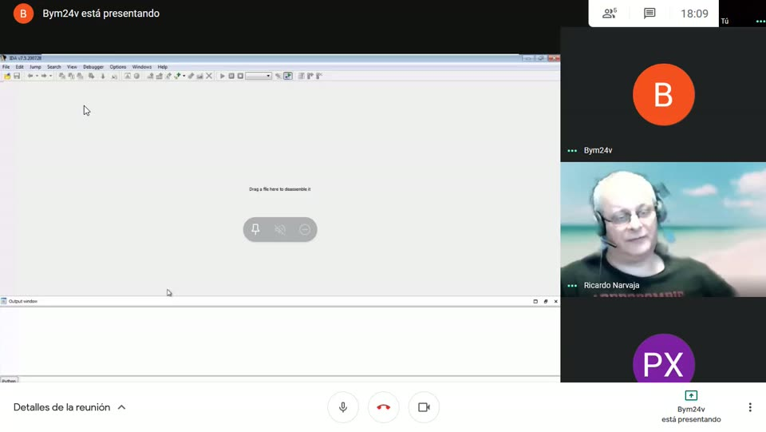
Yes, ahí está. Vale, ya ha puesto a grabar también, por si pasa algo. Bueno, por si pasa algo. Perfecto. Ok. Venga, vamos a Yavin, al ataque. No, pero es que no entra nadie, no sé, estamos los tres. Bueno, pues, no será porque lo hemos viralizado, porque yo en los demás grupos ya he estado mandando el enlace. Sí, sí, no. Pero bueno, vamos a esperarnos si queréis un poquito. Vamos a mandarlo. Ah, mandarlo de vuelta. Sí. Forward. Voy a ver si el IDA skin me vale para esta versión de la 7.5, no sé, ¿no? La última versión se quedó en la 7.3. A ver. El plugin ese de Python está muy bien, ¿eh? Y eso que se puede poner también en modo oscuro, ya me gusta, ya. Sí, sí. Cansa menos la vista. Está muy bien, ¿sí? Sí, está bueno. En el último video ya también puse, como se puede poner, el ePython en negro. Qué bien, qué bien. Ah, sí, hay otra forma de ponerlo en negro en la interfaz. Sí, sí, sí. Claro, porque vos pusiste todo en negro, pero a mí no me gusta todo en negro, a mí me gusta el IDA en blanco y el ePython en negro. Ya, ya, ya, ya. Sí, soy así. Esto se le parece el accesorio al ePython. Claro, el skin este lo que hace es que te lo pone ya directamente todo así un poco más agradable. Pero es por eso porque al final tanto blanco a fin me cansa mucho la vista. Bueno, cada uno tiene sus manías. Pero es que no hay aquí, esta es soporte para la 7.2 y esta de arriba creo que es para la 7.3. No creo que vaya a la 7.5, pero puedo probar. Te digo que lo han mejorado muchísimo, el IDA. Antes cuando yo hace mucho quise ofuscar cosas con tirarle tres o cuatro boludeces, lo engañaba. No lo podía engañar de ninguna forma, siempre me lo acomodaba. Tuve que buscarle la vuelta, me volví loco. Ya también se va sabiendo los trucos. Sí, pero me costó muchísimo, me costó muchísimo.
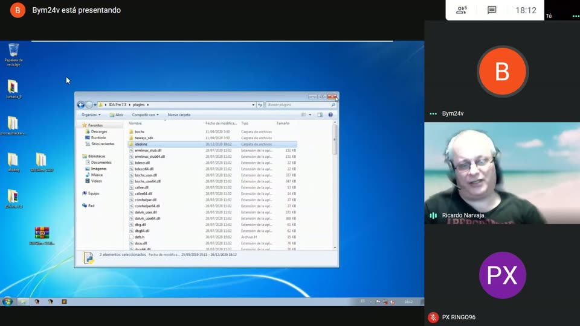
No fue fácil, o sea, enseguida siempre te lo acomodas de alguna forma. Y al final le busqué, le busqué hasta que al final le encontré cómo romperlo. Pero la verdad que fue bastante. ¿Qué fue ahí? Algo está faltando. Sí, algo le falta aquí, idafonconfig.pid y no sé qué. Pero que fue, pusiste un plugin, idafonconfig.pid y no sé qué. El del skin, el del skin, para ver si... Ah, porque se ve que le falta algo. Es una de LL, le falta. Es que en el log canta todo. En el log canta todo. En verdad tengo que ir fuera. Voy a ir calentando la pista de mierda. Sí, tengo... Ah, la carpeta plugin y el skin dentro, sí, está dentro. Nada, pues lo quito y ya está. Sí, por ahí no es la versión para esta versión, viste, qué sé yo. Puede ser que sea para el Python 2. Es que para la máxima que tiene soporte, según el desarrollador, es para la 7.3. Digo, pues probar si va en la 7.5 o si cuela. Ah, no creo, entonces. Cambió mucho, y todas las cosas de Python cambiaron mucho a partir de 7.4. Vale, bueno, ahí está. Vamos a borrar esto. Esto. Este sería el primer reto. Y listo. Esos son lindos. Todos los de Krueger son simpáticos, digamos. Está la divertida hacer un Keygen, hacer algo, está bueno. O sea, no son re difíciles, son fáciles, pero está lindo. Claro. Está lindo. Con una versión 2. Es decir, Enter Power. Enter Power. No sé. Un lujer, mate. Igual que el otro. El otro también dice lo mismo. Tiene el mismo cartelito. Vale, el sistema de construcción de ventana. Y aquí está un mensaje, y aquí otro mensaje. Bueno, esto es el menú. Ah, porque este usa CreateWindow. Para poder saber el proc, tenés que ir a CreateWindow, ahí está el parámetro, ahí en uno de los argumentos de CreateWindow. No, uno de los argumentos tiene que ser uno de los argumentos de CreateFile.
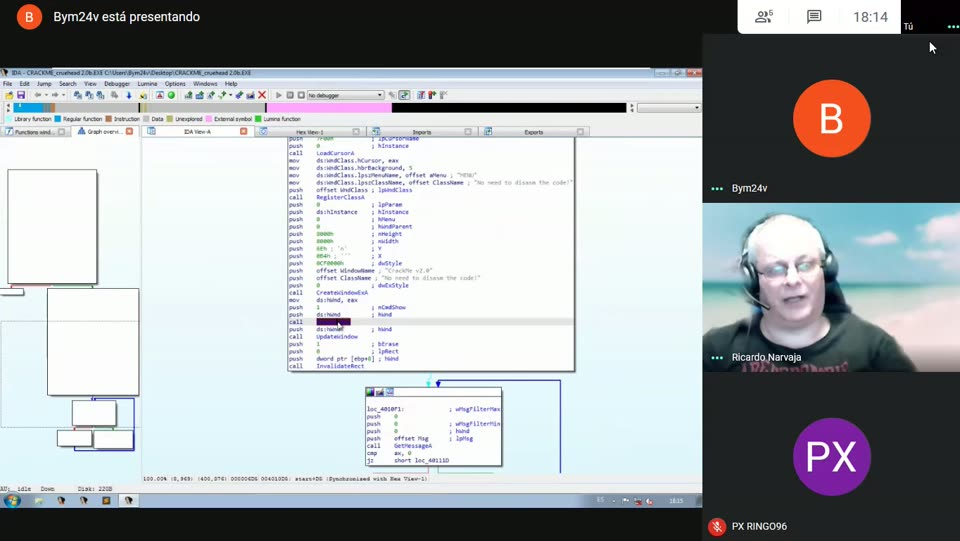
Bueno, ahí tenés también. Las referencias a eso vienen del Windows Proc. ¿Ven qué dice WinProc? Eso es el Windows Proc. CreateFile, en vez de tener el eje Proc, tiene Windows Proc. Es lo mismo. En vez del otro, el otro era diálogo parámetro. Es la misma mierda. Uno lo crea con CreateFile y el otro lo crea con diálogo parámetro. Es la misma mierda. Pero igual tiene el mismo loop y la misma cosa. Los argumentos son los mismos. No, pero fíjate, andá la primera, andá la primer bloque arriba, y vas a dar la referencia. Yo te quería mostrar arriba. Ahí. Buscá la referencia de ese Windows Proc. Ahí, de la función esa. Está empezando. Sí, buscá la referencia de Windows Proc. Ahí el nombre, poné X ahí. Ahí, ¿ves? Ahí es donde, ¿ves que ahí? Ese es el argumento que pasa a CreateFile, que después se registra, que usa CreateFile y todo, para después usar el Proc, digamos, del... Eso no se pasa directo a CreateFile, pero está acá, digamos, en Windows Class, ¿no es cierto? Dentro de Windows Class. Ese es el Windows Proc. O sea que ahí es donde, este CreateFile usa eso, para poder, en vez de LG Proc, que usa el... Es la función que parsea los mensajes. Está bien. Ahí le da doble clic y vas. Chao. Es una forma de encontrarlo fácil. Lo que pasa es que yo no lo había visto en la primera. Sí, aquí le da a Ticom, lo da a Cursor, registro de Windows, y luego aquí el Cran de Windows, pum. Sí, ahí es donde crea todo. Bueno, ahí le da, volvé, volvé donde estaba antes, porque acá. Ahí no pasa nada. Simplemente era para mostrar eso. Sí, bueno, yo esto supongo que también tenga sus numeraciones, ¿no? Con sus tipos. Sí, sí, todo está. Volvé con la flechita para atrás. Tiene la flechita para atrás. Hasta arriba. Ahí está. Sí, me lo puse, me cambié el shortcode y en vez de poner el escape le puse la barra. Ah, la barra. Para atrás. Como en X64. Así va. Está bien, más cómodo. Muy bien. Hola, ¿qué tal a todos? Hola, amigos. Hola, ¿qué tal? ¿Cómo va? Decirle lo que está haciendo, porque si no, no va a saber nada. Sí, por eso quería esperarme un poco.
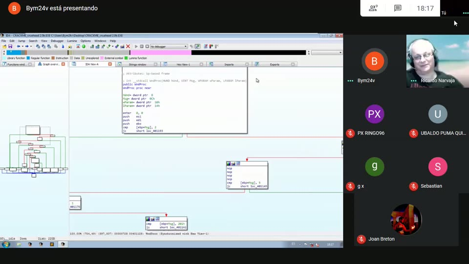
Bueno, a ver, Ricardo y Soli han puesto una cantidad de ejercicios que son hasta que vuelvan a retomar los vídeos oficiales. Y bueno, lo acaba de pasar aquí al grupo. El baúl. Es un baúl. Exactamente. Aquí el baúl y aquí están 2, 4, 6, 8, 9 reto. Sí, pero el último de Soli tiene como 8 adentro. Ese es el pack. Ese tiene metido. Sí, sí, sí. Porque tiene nivel A, nivel B. Cada uno le agrega una cosa más. O sea, que ese último tiene varios adentro. O sea, bueno, pues eso de nivel 1. Hay para rato, hay para rato para divertirse. Nivel 3. El choteado, que si no está a tiempo lo veremos también. Y luego, como dice aquí, la carpeta de Soli, que es de Soli. Sí. Fíjense que de acá a febrero, que volvamos con la juntada, hay tiempo para ir viendo de a poco. Tampoco al saber verlo todo el mismo solo día. De a poco. Poco a poco. Poco a poco. Exactamente para ir entreteniendo, ¿no? Y nada, y acá vamos a descargar el primero. Que sería este. Por si alguien lo quiere ir viendo también sobre la marcha y todo el rollo. Hay dos crámenes, creo que es el crámen, el crámen 2 y el crámen 3. Porque nosotros hicimos el 1 en el curso. Ese es el 2 y después está el 3 ahí. Acá, ese es el 2 y el otro es el 3, el tercero. Ese es el 3. O sea, el 1 lo hicimos ya en el curso. Y el 2 y el 3 nunca los hacemos. Así que bueno, ya que estamos, son todos más o menos simpáticos. Y ya está, ya hemos descargado este y es el que acabamos de empezar a analizarlo aquí en Ida. Acabamos de empezar a analizarlo. Bueno, hemos visto eso, lo que estaba diciendo antes el maestro aquí, donde se creaba la ventana. Con el Winproc y aquí es donde se construye todo, digamos, el diálogo, el front de la ventana que aquí lo crea. Y aquí lo prepara todo, le va metiendo todos los argumentos, sus movidas, sus historias para ir creando. Luego aquí hay un show y un date. Y esto será como un bucle infinito que estará aquí despachando los mensajes de la ventana, ¿no? Sí, sí, claro, le va despachando los mensajes. Y después termina yendo a... Alexis, profesor, ¿no? Es que es como un Q de mensajes. Entonces eso van pasando, van pasando después. Van pasando ahí al Winproc.
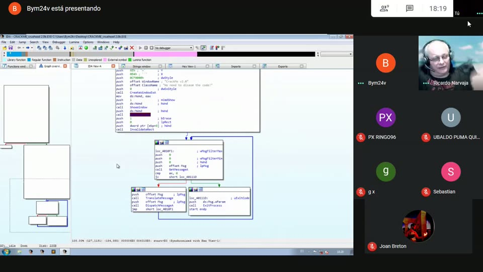
El sistema se lo va mandando de a poco. Salda de mensajes, dispara mensajes. Se ve que se lo va pasando como... Sí, se lo pasa al sistema y el sistema se lo pasa ahí al Winproc. Es lo mismo que el otro que hicimos antes era el de LG. Lo que pasa es que es el de LG, lo único que tiene es que viene como más prehecho. Es como más simple. Digamos, tiene más cosas. Pero es lo mismo. Termina yendo ahí y tiene los mismos mensajes. Los argumentos son los mismos. Ese Winproc tiene los mensajes, las mismas cosas que tiene el otro que vimos antes. La función. Los argumentos de Winproc, si entraba, sabés que son los mismos que el de LG Proc que vimos antes. Tiene el HWin, el mensaje, el número de mensajes. Param y el de Param. Son los mismos argumentos que tienen. Las dos funciones son iguales. O sea, no son iguales, pero me refiero a que no tenemos el mismo argumento. Bueno. Y esta es la ventana que supuestamente es la que nosotros tenemos... La que nos crea es decir las cosas que están en otra ventana. Aquí se puede ver mensaje 1, mensaje 201, mensaje tal. Sí, eso puede hacer lo mismo que hicimos la otra vez. Abrir el Windows ese y abrir el conciente y fijarte cuáles son los números. Los números de cada uno de las ventanitas, de los textos. Así podés ver dónde compara la constante. Y así, cuando metes cada cosa, sabes cuál es el número del control ID de cada uno de los... Cajita de texto. Así sabes dónde entra cada cosa, porque si no... O sea, ese programa y el Windows está muy bueno. Pues tú lo abrís y pones cualquier cajita y te dice control ID y después buscar la constante y lo vas a encontrar por ahí. Es una N1 acá adentro, es una de estas cosas. Está muy bien, sí. Esta creo que era la función mala. Esa hay que pintarla de colorado. Esta va de mora. Eso es. Otro más. Ahí está Oscar. Hola, Oscar. Buenas noches. O buenos días allí. Hola, hola. Hola, ¿qué tal? ¿Cómo va? Bien. Buen día. Encantado. Todo bien. ¿Qué tal te trató el choteado? Uh, un dolor de cabeza. Este sí está... ¿De choteo? Este sí está... Este choteo. Sí, quedé choteado. Quedó muy oscuro ese. Ponele ese más clarito el color, porque ese es medio medio muy... Ponele ese naranquilla. ¿Sabes qué pasa?
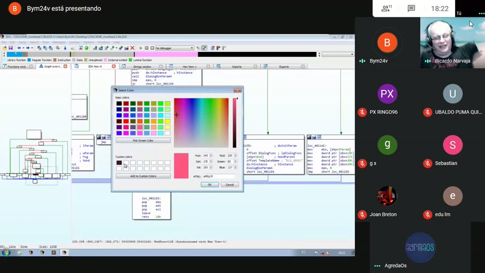
Que me estaba confundiendo porque... En negro sí que tengo que ponerlo oscuro, porque si no, no se ve. Pero así sí. Claro, en blanco se queda mejor así. Bueno, vamos a armar también otro color, que será el verde. Este de aquí y ya lo dejamos ahí. Sí. Guardado. La parte buena, sí. Claro, algún mensaje de estas direcciones tiene que... Algunas son de las que administra la ventana, por ejemplo, como esta, ¿no? Es Cisco, PostKill, aquí será cuando sale. Aquí es la que nos viene de la ventana, aquí es la que nos viene de la ventana mala. Esa también. Y el de al lado debe ser de la buena. Porque el otro que hay... El de al lado debe ser de la buena, creo. Tiene pinta. Y vamos a ver. Aquí hay... Un ofreo, una dirección... Es parecido al otro. Tiene bastante... Va, entró Daniel. Hola, Daniel. Hola, Daniel. Hola, Dani. ¿Qué tal? Hola. ¿Cómo va, Daniel? ¿Bien? ¿Me escuchan? Sí, sí. Muy bien, muy bien. Bueno. Ahí están haciendo el Crack Me 2 de Cruythead. Que la otra vez hicimos el 1. Nunca hicimos el 2 en ninguno de los... Así que este es el 2, parecido. Está en el baúl ahí. Está dentro de los retos para hacer. Muestra ese luego, porque no sé si sale... Como ha entrado más gente, vamos a ir viéndolo un momento. O sea, en el línea este que le acaba de pasar el maestro al grupo, pues si hay alguien que ahí se irá a marcha, también lo quería hacer por su cuenta o sea. En el línea este que acaba de pasar el maestro aquí al grupo, este de aquí sería el baúl, este de ahí. Y es que estamos viendo el primero. Ahí está, desde el 1 al 2 al 3, y luego aquí en un pack me hay como un baúl que hay un montón de retos hasta... De más fácil supongo que hasta lo más compilado. Y esta es de las excepciones, de la estructura y... Y el choteado. El choteado. Y el fiaca también. El nivel unicrame es el fiaca. Vale, pues... Y resumiendo, pues, un poco... Esto era el... El estado del programa, que aquí es donde crea la ventana, con el WIPROP. Pasa todos los argumentos, los prepara a todos los parámetros. Y crea la ventana. Que es la de Krami, que sería la ventana donde estamos ahora aquí analizando. Y, pues, bueno, por las referencias de la string, rápidamente hemos visto... Aquí en el Luz Nujeres, hemos encontrado a la función de...
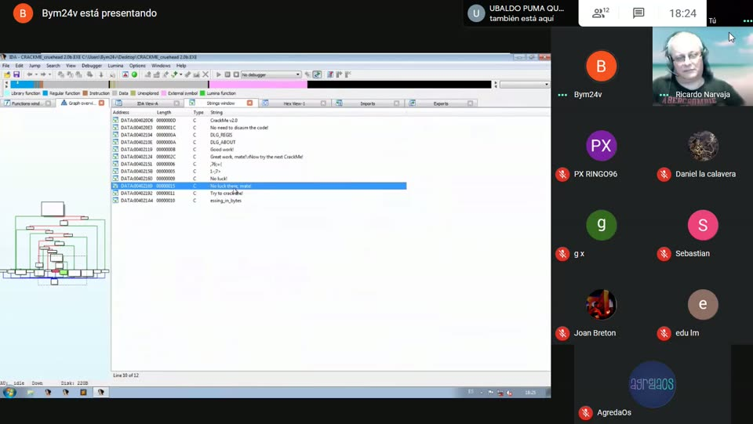
¿Dónde se llamaba, no? Era aquí, haciendo una referencia con X, vamos, al sitio que es donde estábamos aquí. Y esta de aquí al lado, pues, como ha dicho el maestro, es la buena, ¿no? Y aquí, pues, supongo que es donde se va a decir esto, ¿no? Y lo que estábamos hablando ahora en ese momento era lo de las constantes estas de aquí. Porque cada tipo de contacte, pues, es un tipo de mensaje diferente. Y cada una de ellas, pues, va a ser una cosa, supongo, que diferente. Sí, está el mensaje... Sí, está el mensaje y aparte también están los control ID, porque también se fija el mensaje. Generalmente, en la mayoría se fija el 110. Sí, están los parámetros. El command, el command. Y dentro del command, después se fija cuál es el control ID que realmente está tocando. Eso hay que fijarse después. O sea, es dentro, está dentro, dentro. Primero es el mensaje. Creo que normalmente es el 110 el que busca siempre. No sé si estará por ahí. Y luego, como vemos aquí, los W parán. Ese sí. La E y la F. Esos deben ser los control ID. Tendrías que abrir el Windows y fijarte los control ID a ver si realmente son esos. Entonces, ahí sabés que cuando prestas una cosa, va a un lado, cuando prestas otra cosa. Pero esto, ideas de que tenés una... Era con T, ¿no? No, no, no, no. Los constantes. Sí. Las constantes. No, tenés que poner... No, el T no es... Pará, yo no veo porque está negro ahí. ¿Qué es el mensaje? Ponés, no, ponés aquí derecho. No, no, la T es una estructura. Yo lo voy a ir a la número 5. Yo no sé el atajo. Pone clic derecho. Ahí donde dice, use standard symbolic content. Y ahí pone WM. Control F, WM. Que son todos WM algo, viste. WM. WM, button. WM, guión bajo. WM, guión bajo. M. No, no, no, WM y después guión bajo. No hay. W o WM. A ver, command. A ver, command. Ah, no, porque no están importadas. No están importados los nombres. Yo la otra vez en el otro lo importé. Le hice un archivito y lo importé. Así nomás. Ahí está, ahí está, button down. Ahí está, sí. Ahí está. Entonces es ese, claro. Button down 201. Y era WM. Estaba ahí. WM, ¿no? Sí. Listo, ese button down. Es una estructura.
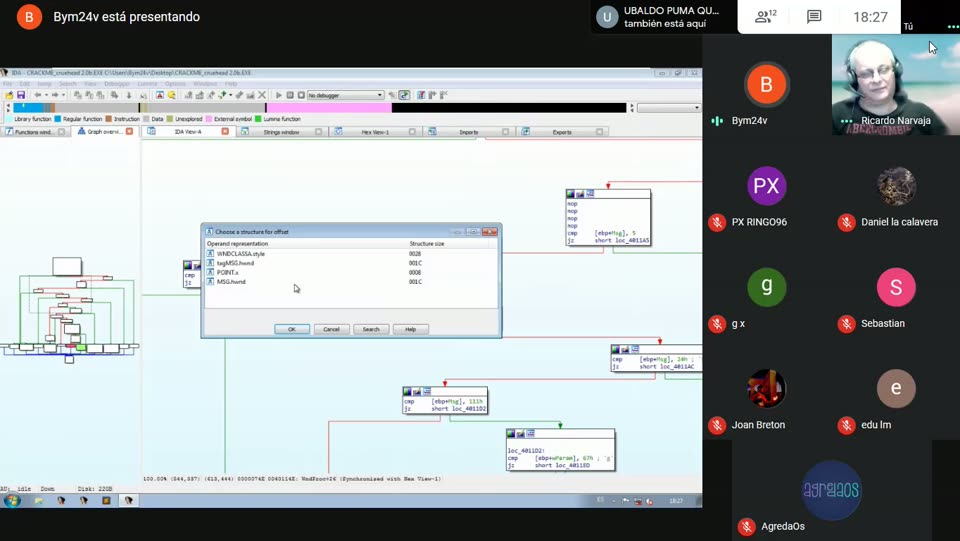
Yo pensaba que era la... No, no, no. Pero creo que había una forma de entrar a las numeraciones directamente, creo. No me acuerdo. Sí, pero acá tenés 111, esta debe ser command. Esta 111, ahí abajo, debe ser command. Ah, esta de aquí, sí. Esa, si no es command, pegarme en palo. Ahí está. Una vez que ya entraste, ya elegiste qué tipo son, ya te aparecen las opciones. Es con M. Es una maravilla. Entonces ese, cuando entras con command, abajo deben ser los control ID. Eso, 67, ¿ves? Los parámetros son los control ID. Sí. Y después está close, por ahí. S6. Bueno, en serio, está la... Algunos, viste, que no se usan mucho, viste. Bueno, se lo usa el programa, pero digamos que no son tan importantes. Pero en el de command, el command es el más importante, porque después en command dentro están los control ID. Ve que empieza con los parámetros, eso deben ser los control ID. Tendrías que abrir el Windows y bajártelo, y abrir el programa y fijarte... O el Result Hacker, no, eso no, porque esos son parámetros. Yo normalmente uso el Result Hacker, sí. Bueno, también el Result Hacker, uno de esos, y abrirlo. El Windows es mejor. El Windows te lleva más directo, sí. Sí, es más directo, porque... Ah, sí, sí, lo tengo ahí. No sé si... ¿Tiene el control ID el Result Hacker, sí, también, no? Sí. ¿Listo? Ese es el Proces Hacker, sí. Vale, me da pinta, ¿dónde está? A ver, quiere entrar alguien. Gracias. Ah, está yo. ¡Hola, Joey! ¡Hola, Joe! ¡Hola, doctor! ¡Hola, doctor! ¡Hola, Doc! ¿Qué hay de nuevo, Doc? Bueno, a ver si tengo que ejecutarlo ahí también. Está en la barra, ¿no está en la barra ahí? Sí, está en la barra. Fíjate que en la barra quedó abierto el programa. No, el otro no, digo el... Ah, el Result Hacker. Está en la barra abajo. Ah, te sale así directamente. Ese truco no lo conocía yo, qué bueno. A ver, a ver. Sí, sale el control ID, pero no te sale. 22A. No, no, el... No, pero no es el control ID ese. No. No, eso lo recusa. Esto es como si fueran los recursos. ¿Cuántos tenemos que poner el...
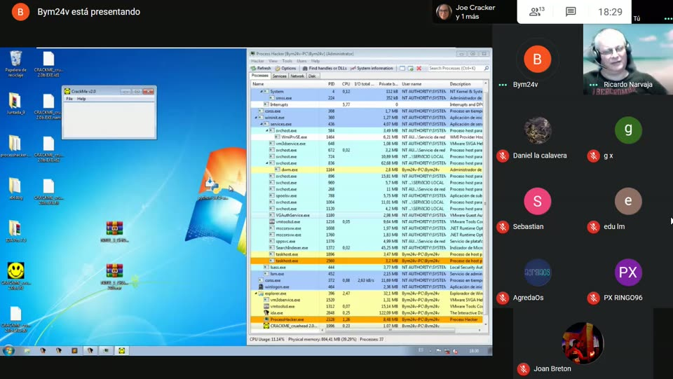
El Windows, el Windows. Baja Windows. Ese es el más cómodo de todo. Sí, baja Windows, que es el mejor. ¿Cómo se llama? ¿Cómo se llama? ¿Creative Windows? Windows, así, con una E al final. No, no, no, no, no. Windows, como está Windows, ese al final. Una palabra sola. Ese. ¿Creative Windows se llama? Ahí está, download Windows. Ese. Ese, ese. Ese, ese. Debe ser ese, supongo. Supongo que será ese. Yo lo tengo hace tanto que ya ni sé ese. Baja. Yo siempre, sí, sí. Yo siempre he usado el resource. El resource. El resource. Hacker. Después de que esté más directo, pones el mouse. Sí, porque se arrastra el botón, o sea, el ratón por dos iconos y todo, y te dice qué tipo de recursos es y todo. Está muy bien. Está muy bien. No se le va la olla. No quiere pegar directamente. A ver. Bueno, ahí está. Es, instala en un minuto igual. Es una pavada. Ya está. Ahora córrelo. Córrele el crackme también. Ah, mira, sí que tenía yo aquí. Ahora lo acabo de ver. Resulte, hacker. Pero usa este, el Game of Web. Pero es que este viene bien. Porque igual que yo no lo conozco, muchísima gente tampoco lo conozca. Claro, así vamos aprendiendo. No, no. Donate no, no donate. Ahora abrí el cosa. Abrí el cosa. El crackme. Y anda donde tenés que tipear las teclas. Abrí el crackme. No, no, no. Abrilo, abrílo fuera. Abrilo fuera. Abrilo fuera. No hay que arrastrar, ¿no? Y hay que, tenés que abrir la ventana directamente del crackme. Eso, Windows. Dejalo ahí, déjalo ahí. Abrí el crackme y andá la ventana donde se tipea la clave. Eso. Y a poner mouse encima. En el OK. Ahí, ¿ves? No, no. Solamente, por pasar el mouse, el control ID de cada uno. Ahí, ¿ves? Es uno que dice 13, 8. 13, 8, control ID, sí. Ese es el control ID de la cajita esa. Este programa no lo conocía yo. Esto es una maldita maldita. Este es el más piola de todos porque enseguida no tenés que estar buscando nada. Poner mouse encima y chao. Ese es el control ID, 13, 8. Entonces ahora, busca por ahí, a ver, 13, 8. A ver si aparece en algún lado. Este. La constante en el IDA.
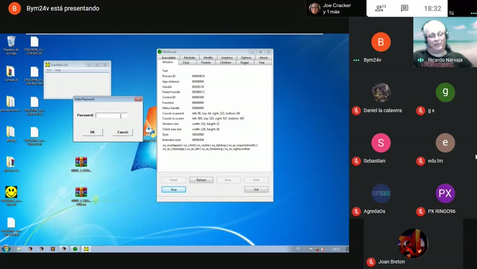
Este programa también se menciona. 13, 8. Es sencillo y te dice la aposta, lo que necesitas. 13, 8, sí. Vamos a montar. Y también tenés los otros botones, todo. El de la caja de password. Ahora buscar el IDA, la constante. 13, 8. A ver si está. Por ahí no está, porque a veces hay programas que restan algo y te hacen algún truquito para que no aparezca directo. Pero bueno. A ver. Fíjate, a ver, en search. Busca search. Ahí lo dice arriba. Search. Inmedia evalúe. Inmedia evalúe. Y de ahí poner final ocurrencia. La tilde abajo. Ahí está. Qué bueno. Ahí está. Ahí es donde entra, ahí es donde entra el texto. Cuando metes el password en ese lugar. Porque es el getlg intenté cuando entra en ese. Y ahí está string también, donde lo va a guardar el buffer. Así que más arriba, justito, está push offset string. Es el buffer donde lo va a guardar. Así que ahí ya sabés que va a guardar lo que vos tipiás. Ese. Y podés renombrarlo. Ponerle ese, qué sé yo, password. Te lo dejó negrito eso medio. Y ahora podés ver la referencia donde usa ese password. En X, ahí ponele. No, no, no. Solamente a password, a password. Ahí mismo, a password. Se ponen X ahí. Y ahí tenés todos los lugares donde lo usa. A ver, en alguno de esos lugares debe ser cuando ya lo va a comparar. En alguno de esos punteros, sí. El último puntero te lleva la password. Tiene que hacer, ahí está, ahí usa password. Claro, ahí justamente es lo que vos tipiás y donde va a chequear adentro. Ahí es donde está la papa. A ver, compara con A. Ahí estaba el algoritmo, sí. Compara con A, compara con Z. Es parecido al otro Crank Microhead. Sí, sí, tiene un aire al otro, sí. Ahí hace un short. Vale, sí. Vale, pues podemos poner aquí un break. Sí, sí, por E1, prepa, por E1. Bueno, entramos aquí dentro ahora y vemos lo que hace el algoritmo. Eso es, vamos viendo poco a poco.
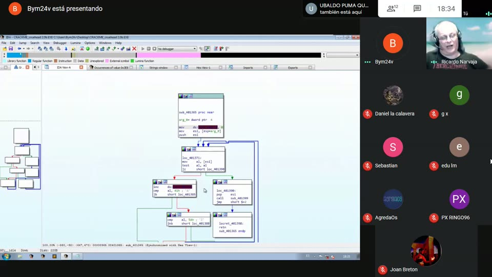
Y vamos a empezar aquí, seguramente lo va a pasar por aquí. Y ya lo va a usar ahí. Si es A, viene aquí, incrementa E1 y si no, pues pregunto. Si es más bajo, si es más bajo. O sea, fíjate que ahí significa si es más bajo. Si es más alto. Bueno, supongo que esté usando el diccionario, ¿no? Si es más alto, te manda al cole, te da abajo, que debe ser que te lo debe pasar. Ahí debe estar. Sí, eso le resta 20. O sea, que debe ser que ahí lo pasa mayúscula o pasa minúscula. Si es más bajo, va ahí. O sea, si es más bajo, perdón. Si es más bajo, va a... No veo bien porque no tengo ni lo... Bueno, pero eso debe ser... Ahí está, está bien. Si es más bajo, va ahí. Y si no, cuando está comparando, si es más alto, sigue ahí. Y lo que hace es fijarse si es más alto que 41 y si es más alto que 5A, te le va a restar 20. Fíjate que son las dos condiciones. Va ahí, así. Después a 5A y después de ahí va y de ahí va ahí. Ese es el... ¿Cuál le resta 20? O sea, ponerlo en mayúscula. A restarle 20 lo ponés en mayúscula. Y el lapicito ahí en el medio pone el nombre, poner a mayúscula. En medio del borde ahí. No, no, entra, entra, entra ahí. Ahí no más arriba, arriba el margen. Ahí, ponerle, poner a mayúscula. Porque al restar, como él, le resta 20. Si es mayor, por ejemplo, 61, es la minúscula, al restarle 20. Si es más grande que 5. O sea, es como poner mayúscula. Bueno, lo único que hace es eso, es agarrar tu nombre y poner a mayúscula. ¿Y después qué pasa cuando sale? Ahí sí, cuando sale... Ahí va, ahí está la papa. Pero no me gusta esto cuando se queda... Ahí tenemos un... Sí. Y bueno, aquí Soria tordó y va a ir trayendo. Luego hace un bucle, sí. Soria con CL.
Y hay que ver lo que es CL. CL hay que fijarse ahí, que hay en 40, 21 a 3. Porque eso lo va a apuntar en 40, 21 a 3. Ahí se está tomando bait de ahí. La dirección esa, 40, 21. Es como una tablita. Que ahí dice... Está tomando ese bait. Anda ahí a 40, 21 a 3 y apretá. Apretá ahí. Apretá ahí. Missing in Bites. O sea, que lo está soleando con la letra, letra por letra, con esa string. Con la string missing in Bites. Va a sorial el tuyo con eso. O fíjate que agarra una, que agarra la letra de esa tablita, a CL y la va a sorial con tu... O sea que... Estás soleando tu password que vos te fijaste con missing in Bites. Eso es una constante que hay que tener en cuenta. Sí, hay que... Eso habría que ir anotando. Porque tu password, Bites a Bites, lo soria con eso. Vamos a ir apuntando en un notepad. Es como que missing in Bites debe ser un tipo clave. O sí, un tipo Soreo iba a ser... Claro, Sorea va con Bites porque agarra ese L y después lo incrementa también. O sea que... Edi, vos fijate que Edi es el puntero dentro de esa tablita. Missing in Bites y Edi es como el índice de la tablita. Y como lo incrementa también, va a ir incrementando los Bites dentro de esa tabla. O sea, eso que se ve feo, Missing in Bites, entre paréntesis es Edi, es como... Hacés clic derecho encima, vas a ver. Donde dice Missing in Bites, Edi. Ahí, ahí arriba. En la primera instrucción que está en el bucle. Ahí. Hacés clic derecho. En donde dice Missing in Bites. Ahí. No, no, no, en la instrucción. Fijate que es lo mismo. No, no, no. Donde pone el lock. Ahí. Fijate que te lo muestra, clic derecho. Ve que te lo muestra Edi más... O sea, es mucho más fácil de verlo en la primera. Ahí. Edi más 40. O sea, que Edi es como... Empieza de cero y va sumando. En realidad, sí es la forma tradicional de verlo, ¿no? Pero en la forma C más más... En la forma de C... Claro, en la forma de C, Edi es como si fuera el índice. Como si fuera un array y Edi el índice. Por eso te lo ponen en esa forma. Es como si fuera Edi el cero. Si Edi vale uno, es como si fuera un array del cual vas corriendo el índice. En la forma tradicional de Assembler, es como que le sumás a Missing in Bites. A la dirección le sumás cero, uno, dos. Es lo mismo. Es como que tenés un array que empieza en un lugar y le vas sumando el índice S.
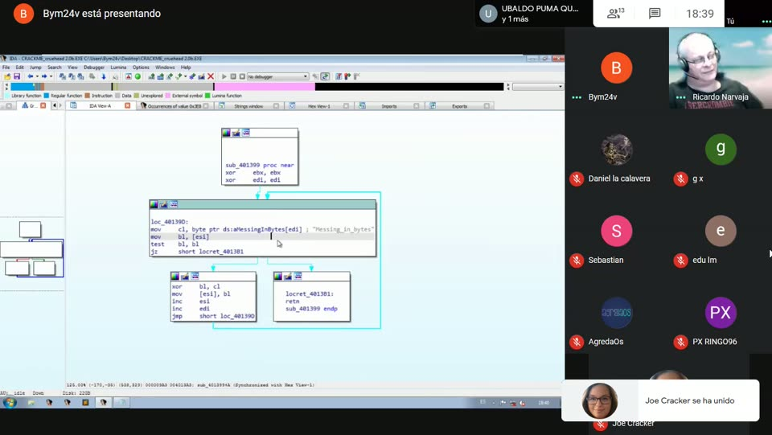
Listo. Joy, se va, viene, entra, va. Bueno, entonces ya sabés eso, que tenés que sorear cada letra tuya con... Primero las pasa mayúsculas. Si no son mayúsculas, las pasa mayúsculas. O sea, que te conviene poner las mayúsculas directo. Y después, sorea con eso. ¿Y después qué más? No hablas nunca este hombre, está ahí. ¿Qué tal, Doc? Estás mudo. Una caca Firefox. Me tiras todo el rato. Sí, sí, sí, va fatal. Y bueno, ahí estamos. Con el Scragmy de Croixhead 2. Pues ya hemos visto prácticamente lo que hace, ¿no? Ya sabemos que tiene que estar dentro del diccionario, si no las convierte. Y que una vez que le doy el bucle, entra a la de Missing Byte, que es la del paseo. A Soriar, a Soriar con Messing Byte. Tu password con Messing Byte. Byte by a Byte. El error de nota. Eso, vamos a ir haciendo la chuleta. Byte byte, agarra cada uno de los tuyos, si son mayúsculas, ¿no? Porque si son minúsculas, lo pasa a mayúsculas primero. Y lo va a Soriar y va convirtiendo en otra cosa. O sea, lo va transformando en otro password, Soriar con Messing Byte. Y después, ¿qué hace? Terminamos el bucle y de ahí... Hay que bequear. Sale, no, Choma. A ver. Sale de ahí. Sí, salta la función. 40, 13, 90. Sí, hay un micro que está medio, a veces el mío. Hay alguien que tiene el micrófono medio haciendo ruido. Vaya muteándose a ver quién es el que hace ruido. Yo, eso, vos me parece el ruido. El micrófono está medio... Pero no quiere apagarse el puñetero. Ahí está. Silencio. Es que se ve que Fireball le está dando la palabra. Es una... Sí, tenés que estar... Bueno, ahí sale Soriado. Y después, ¿qué pasa?
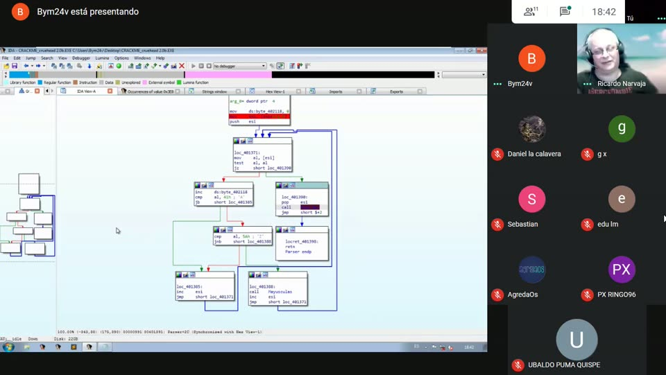
Vale, una vez que se ha Soriado, pues supuestamente tendremos aquí el Papu Soriado. Y luego, pues, va a entrar en esta función. ¿La va a comparar con esa? Ah, pero fíjate. ¿Dónde lo guardo? Bueno, lo compara con eso. Pone A, a ver, a ver. Apretala. No, no, pero no. No. El primero no me lo coge. No sé por qué. Ah, porque ese es el tuyo Soriado. Ese es el tuyo Soriado. Claro, ese es el tuyo que Soriaste. Ese no es una string, pero empieza con Guayicos. Pero ¿y el otro? ¿El otro? O sea, ¿con el otro que lo compara? No, ese no. Bueno, no, no, no, de vuelta el código. Uno es ese y el otro es el de arriba, ese. ¿Está bueno? Sí, pero como yo no he puesto nada todavía, no hay nada. Ah, bueno, claro. No está corriendo. Sí, y ahora ya, como más o menos, como vamos viendo todo lo que ha hecho, ¿no? Bueno, ya podemos correrlo. Claro. O sea, vos lo que tendrías que hacer es agarrar y fijarte en esa clave, que es la que va a comparar, y Soriarla con Messing in Bypass, acá cuál es la que hay que poner originalmente. Byte a Byte. Porque el SOR es inversible. O sea, que si vos tu password lo tenés que Soriarla con Messing in Byte para llegar a esa clave chota que hay ahí, entonces quiere decir que esa clave chota que hay ahí, Soriarla con Messing in Byte, te va a dar tu password. Con eso vas a hallarlo, o sea, haciendo SOR byte a byte. Agarrá, por ejemplo, a ver dónde decía ahí, eso que vos dijiste que no sale, no sale, no importa que no salga un string, pero fíjate cuáles son los, anotá los bytes. Uno F, no sé cuáles eran los que estaban ahí, en el que compara ahí. Eso, uno F, eso, o sea, hay que anotar los SOS y Soriarlo con Messing in Byte, y ahí te va a salir el password verdadero. No, eso sea como se hace, no, no, para, para, sea así. Marcalo ahí, te dejá, anda donde dice Edit, marcalo de vuelta, marcalo de vuelta, y anda donde dice Edit, es por data. Ahí, es por data. Ahí arriba. Al segundo, al segundo, al segundo, al segundo, X-Stream Spacer, entonces ahí lo tenés todo. Lo podés copiar, copiálo, lo copiás, ahí directamente copiálo, y control C, y lo podés exportar. Tiene varias formas de exportar, pero bueno, esa me parece la más peor. Es que el IDA lo tiene todo, es una maravilla. Entonces eso tenés que Soriar uno por uno con Messing in Byte.
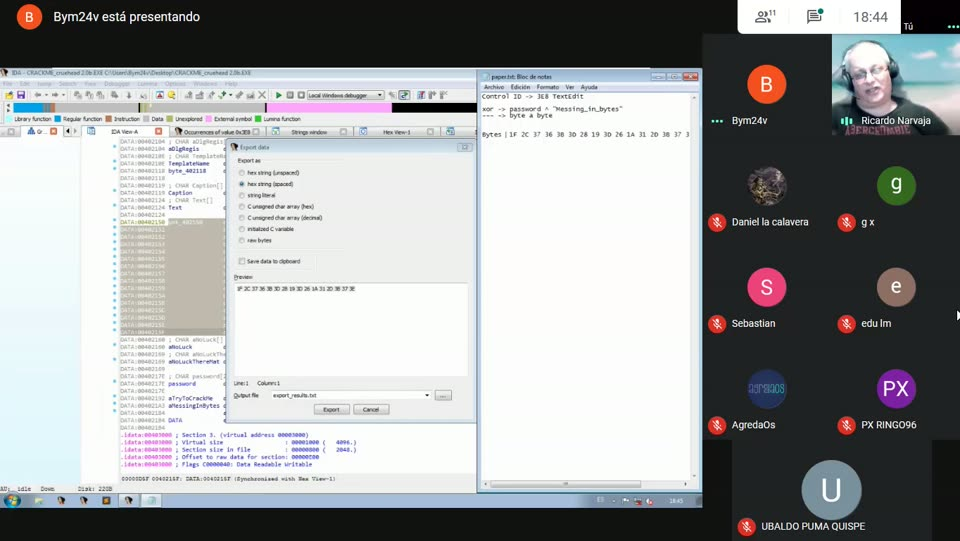
Deberías poner los bytes de Messing in Byte, o sea, cuáles son los bytes verdaderos de Messing in Byte. Agarrar Messing in Byte y hacer lo mismo, para que te exporte los bytes de Messing in Byte. Ese, ese pone U, así para que se, y ahí está. Y exportá todos esos bytes. Igual que hiciste recién. Así los bases después los Soriar, sí. Es ponerlo ahí. Eso, copiálo, y Soriar uno por uno, y ahí te tiene que dar el, abajo. O sea, abajo. Entonces tenés que, bueno, tenés que ponerlo alineado, ¿no? O sea, el 1F con 4D, el 1F con 4D, tendría que estar alineado, ¿no? ¿Pyton no te lo puede hacer un Soriar con esos bytes? Sí. Sí, podés hacerlo, pero, bueno, podés hacerlo uno a uno también, agarrar 1F con 4D, no sé, podés hacer un For, sí, agarrar, hacer dos cadenas y Soriar uno por uno, hacer un For, agarrar el primero del primero, y te lo vas Soriando y te lo vas imprimiendo. Se puede hacer, como quiera. Igual, son poquitos, si agarrar el primero, agarrar la calculadora, agarrar 1F con 4D y abajo por el resultado. Está bien. Es seguida, son poquitos. Con la misma calculadora de Ida. Con la calculadora de C, o la de Python. Sí, también. No, pero el Python no debe ser esto muy… No, yo creo que… Sí, pero 1F, digamos que eso sería la, digamos, la solución del reto. Sí, pero sacala, a ver cuál es, a ver si funciona. Igual tiene alguna trampita lo último, aparte del SOR. Sí, vamos a ver. Vamos a ver, a ver. Tranquilo, Joey, no pasa nada. Son cosas del directo, como se dice. Lo que pasa es que… Eso que yo he echado a veces es que no me doy cuenta. Sigo no hablando por el chavo o lo que sea. A ver. Ese sería el trucho, ¿no?, el que hemos puesto. Sí, el de arriba sería el… El constante. En Python está el SOR, ¿eh? Es el sombrerito ese que está arriba de la tecla 6. Ese es el SOR. Y el Missing Inbyte. Ajá. Y bueno, vas haciendo uno por uno y ya sale cuál es la T, el password, uno por uno.
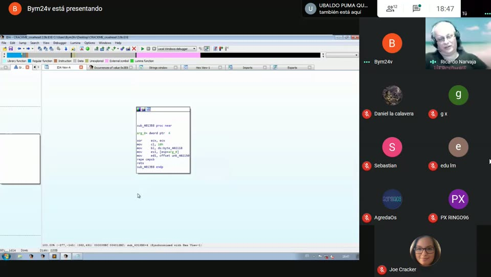
O sea, lo hacemos uno por uno, lo hacemos… Bueno, pues vamos, poco a poco. Total. Estamos aquí en Entre Amigos. Sí. Vale. Así vamos hablando de otras cosas también. Claro que sí. F1F, SHORT… SHORT… SHORT… 4D. Sí. SHORT… 4D. Igual a 52. 52. Ah. Bueno, el que tiene la tablita vaya poniendo. ¿Qué es 52? Ya está. 52. A ver si tengo la tabla ASCII acá. Eso. Es que aquí me quedéis pasando lo que vas a… Sí, ahora te pasamos. Ahora te pasamos. Vale, el siguiente. 12. Oh, está ceno. 12, 65. Eso es. SHORT… 65. Eso. 49. Siguiente. 37. SHORT… 73. Exacto. 44. 94. 36. No. 36, SHORT… 73. 73 también. Eso es. 45. 3D. 3B… 69. 69. 69. Sí. 22. 3D. 3D, SHORT… 6, 6, 6, 6, 6. 6, 6, 6. 53. 28. 28. SOR… 6, 67. 4D, 6. 19. ¿Cuáles eran los números que te fue dando? 52. 52. ¿Cuáles eran los números que te fue dando? 52. ¿Cuáles eran los números que te fue dando? 52. ¿Cuáles eran los números que te fue dando? 52. ¿Cuáles eran los números que te fue dando? 52. ¿Cuáles eran los números que te fue dando? 52. ¿Cuáles eran los números que te fue dando? 52. ¿Cuáles eran los números que te fue dando? 52. ¿Cuáles eran los números que te fue dando? 52. ¿Cuáles eran los números que te fue dando? 52. ¿Cuáles eran los números que te fue dando? 52. 52. ¿Cuáles eran los números que te fue dando? 52. ¿Cuáles eran los números que te fue dando?
52. ¿Cuáles eran los números que te fue dando? 52. ¿Cuáles eran los números que te fue dando? 52. 49. 49, todo hexa, ¿no? 49 es... 48, 49... Uy, no veo nada. Acá yo estoy más ciego que... 49. Acá está. HI, la I. ¿La I de Italia? Sí. La I de Italia. Vale, el 44. 44, la D. Sí, 41 es la A, B, C, ¿no? La D, 44 es la D. D, de dedo. ¿D de Dinamarca? Sí, sí, sí, como RID. Hasta ahora va RID. 45. Ah, vale. 45 es la E. El 52, otra vez hemos dicho que era la R. RIDER. El 53. 53. El 53, ¿dónde estamos? 53 es la S. Es RCT, sí. Y después viene el 54, la T. Ah, 4F. Readers. Ah, la O. 4F, la O. Vale, pues tengo que seguir poniendo números. Perfecto. 19. Short. Gracias, Joey. 5F. Igual 46. Sí, no, porque ha pasado creo que un link. No, no, sí, a ver, si estoy en Python o en cualquier cosa se puede hacer rápido. Sí, eso le hace eso. Pero el paso es para divertir su rato. Claro, sí, el tema es hacerlo. Claro, hacerlo entre todos. Porque a lo mejor la gente que lo comprende bien es relativamente una chorrada hacerlo así. En Python agarras y haces dos strings y le pones un for y te lo imprimes en dos minutos. Claro, por eso te digo que... Está terminando. 19 y 5F, ¿qué da? La F de Francia, el 3D. La T. Espera, espera, es que aún no está convertido. 3D, Short, 69. El 69 sería el 54. La T. La T, ya sé que es la T, pues ya me acuerdo de la clave.
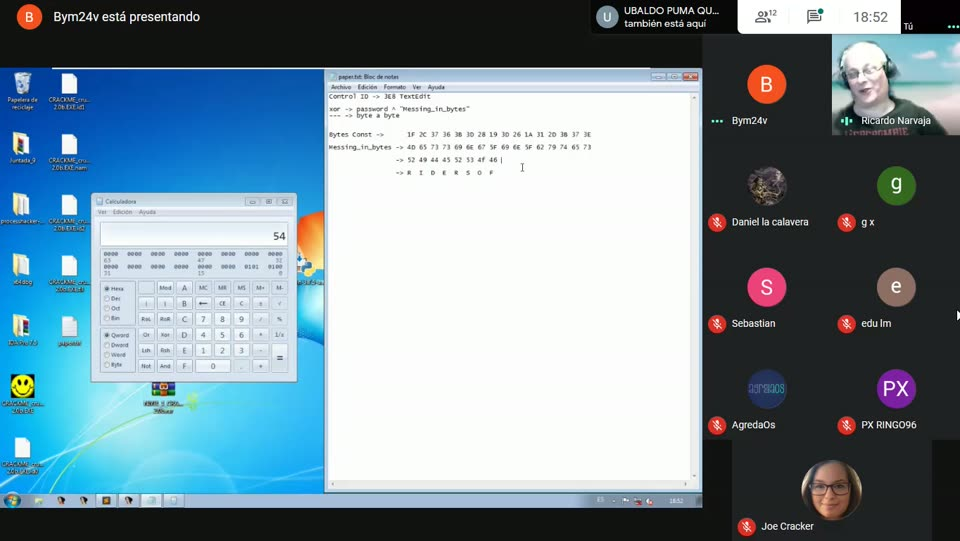
Ya me acuerdo cuando lo hice. Tú corres con ventaja. No, pero me acuerdo cuando lo hice hace 10 años. Joder, vaya memoria. Es la clave. ¿Hace 6 años? Madre mía. No, hace como 10 años lo hice, pero me acuerdo la clave. Memoria, vamos. Mira, si no me te digo, debe ser Readersoft de Storm. 40. De Storm, ahora viene H, ahora viene el H. A ver. Readersoft de Storm, seguro, vas a ver. Ahora viene la E. De memoria. 48 era la H, está bien. Y después viene la E. Ahora viene la E, seguro. 5 es la E, sí. La E, seguro. Readersoft de Storm. ¿Eh? ¡No! ¡No! Jodido Windows. ¿Qué mierda es este Bill Gates? Siempre igual. Esa debe ser la S, seguro. 53 la S. Ya está, adelante. La T también está. 74 la T. 79. ¿Dónde? Yo. Yo. 79. A ver. 54. Sí. 54 la T. T de Toledo. Readersoft de Storm. Acordate que yo te acuerdo. Sí, sí, sí. 10 años hace que lo hice, más o menos. Porque yo no lo hice ahora. Voy a memoria. Voy a cerebro. No, lo que pasa es, lo que pasa es que este Crank Me, yo lo había puesto como... Vos sacabas el Crank, vos sacabas el password y te daba acceso a otro, a otro. Y como tenía un bug, vos podías, entonces todo el mundo me preguntaba, che, ese, y siempre me decía, entonces siempre tenía que volver a verlo y me quedo fijada. Porque tenía ese problema, ese bug que tenía. RM. Sí, seguro. 52. ¿Alcanzará con esto?
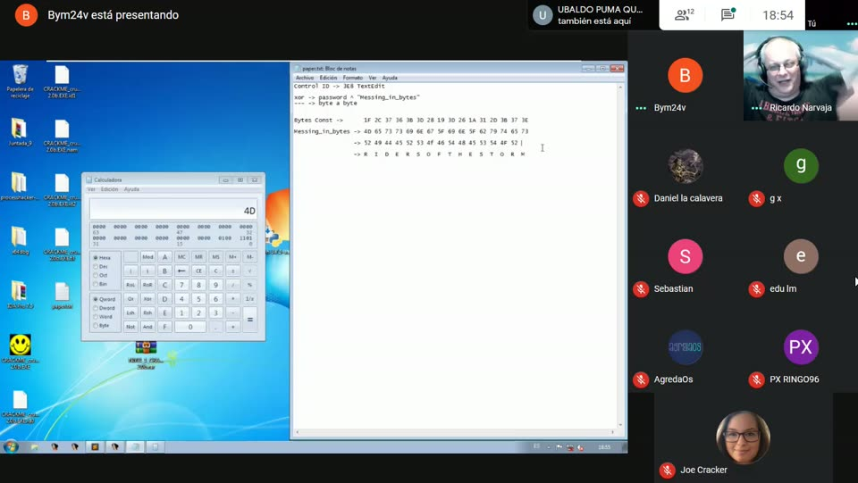
Vamos a poner la clave. Vamos a ver si alcanza. Tiene que tipear Readersoft de Storm. Sí, sí, sí, sí, sí, sí, sí, sí, sí, sí, sí, sí. No se pasa. Reader Storm. Reader Storm. ¿Funcionará? Vamos a verlo. ¿Alguien quiere entrar? Bueno, dale, próbalo. ¡Gritball! ¡Gritball! Ahí está. Great war. Bueno, uno. Una de las. Prueba superada. Muy bien, prueba superada. ¿Alguien no entendió algo? Pregunte, estamos acá. ¿Qué se sabe? Hombre, sería bueno verlo en Python, cómo hacerlo. Sí, pasas en Python, haces dos strings. Sí. Es fácil. ¿Sabes hacerlo? Ya lo miraremos. Es fácil en Python, tenés que hacer una string que tenga barra x y todo eso, barra x, barra x. O podés hacer también, sí, hay varias formas, hay muchas formas. Sí, no, pero en Python no querés ser un for y hasta, ¿no? Un for y a que vaya agarrando de a uno y de las dos strings. En exa, ¿no? En 0x, no sé, todo en exa. Sí, o lo podés poner, sí, también, o lo podés poner como string. Puedes hacer muchas cosas. Lo podés hacer una lista también, que estén todos en exa. Ahí te da una lista. Fíjate, cuando lo soportas en Ida, hay uno que te devuelve... Yo decía, más que nada, de probar la nueva funcionalidad del Ida Python, ese que comentaste, a ver si se podía hacer así. Con el plugin ese de Ida Python. A ver si se podría hacer lo que hemos estado mirando ahora. Sí, lo que pasa es que no sé si tiene algo de específico de Ida Python. Es de I, de Python. Es igual, ya lo veremos. Sí, con Python solo, porque con Ida Python... Con Java, con lo que sea, con lo que sea. El tema es Sorial. El tema es que luego se podría generar, por fuerza bruta, se podría generar un montón de seriales y luego ir comprobando si corresponde, y si corresponde, pues te dan nuevos seriales.
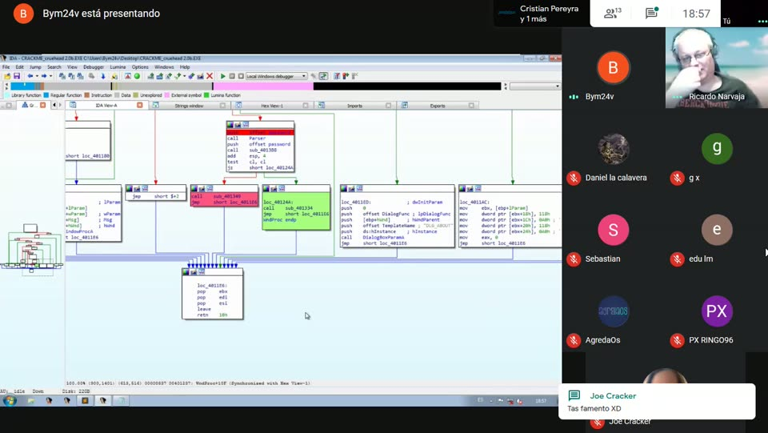
Lo que pasa es que Ida Python está bueno para cuando... Está bien, sirve para cualquier cosa en Python, pero también cuando usas cosas de Ida Python, cuando usas cosas de Ida Python, de Ida, específico de Ida. Acá hay algo que lo usas en cualquier Python, digamos. Lo puedes hacer en Python cualquiera. No es necesario que esté adentro. El Ida Python es como la API que tiene Ida para poder controlar el depurador. Ah, puedes controlar el debugger y acá mismo, el desacelerador y cualquier cosa. O sea, cubo, parchear. Pero igual la ventana de Ida Python es genérica. Vos podés usar cualquier cosa, pero... Sí, sí, claro. Generalmente a uno le gusta cuando le gusta cosas de Ida Python como tal. Ok. No deja de ser Python como tal. Bueno, aquí están las dos, pero no deja de ser Python como... Sí. Bueno, pues no, si queréis, pon el siguiente, como tú quieras, BIM. Sí, esto lo voy a guardar. Sí. Ya lo miraremos nosotros por nuestra cuenta, lo de Ida Python y eso. Sí, eso, eso, eso. Eso, eso. Todo lo van a hacer hoy, a la miércoles. Bueno, ya que le hemos pillado el tranquillo. Los demás también podéis hablar, ¿eh? Si queréis ayudar. Sí, alguno que opine, alguno que opine, que pregunte, que diga algo, que estamos acá. No tengan miedo. Claro, sí, esto es lo que se trata. Claro. Sí. Que lo vayan preguntando o yo qué sé qué. Claro, o aportar ideas. Sí. O transformar otras cosas. Si es que, en verdad, estos son problemas que hay que resolver y cada uno... No pasa nada, Doc. No pasa nada, Doc. Ya nos veremos. Tranquilo. Tranquilo. No pasa nada, tronco. Vale, pues. Listo. Bueno, pues vamos a buscar el siguiente. A ver si te está grabando todavía. Lo que pasa es que el DataPython, yo hice un tutorial que se va a hacer el 25, ahora viene el 24, que es uno de Solid, que es sobre anti-debug, otro sobre anti-debug. Y después el 25 armó toda una configuración de DataPython que está buenísima, que con eso va a ser mucho mejor que verlo ahora ya, ¿viste? Cuando tengan eso, va a estar más bueno, va a ser que van a ver que está mucho más piola hacerlo con esa configuración que está en el 25. Muy bien. Por ahora está ahí todo bien, pero después lo vamos a empezar a usar. Bueno, pues vamos a hacer el crucea del tren, ¿no? Porque ya que estamos en ese mudo, luego ya pasamos al FIACA.
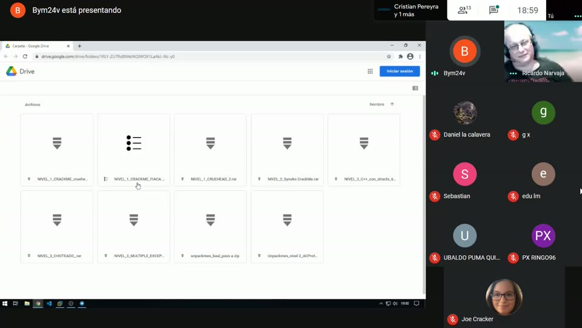
El mío, el FIACA. El 3 me parece que es un login, ¿no? Es user y password, si más no recuerdo. Sí. El FIACA no lo van a hacer, que el mío. Ah, pues. No, sí. Sí, el tema es... Ah, gane, ya que está con este, gane, ya que está ahí. Vamos al FIACA, vamos a ir por orden, venga. Ah, por orden. O sea, está el FIACA ahí. Ese es fácil, ese es lindo, es parecido. No, está hecho, no está hecho, no está hecho. Este es el FIACA, y este es el 3, y este es el 2. Y este es el 2. Si no, vamos a tener que hacer más ejercicio, porque si sacan todo, vamos a tener que hacer más difícil. Tiene los símbolos y todo, mira qué bueno que soy. Mejor todavía. Una maravilla. Sí, sí. Es buenísimo. Para que no tenga problema, nada. No tenga que... Aquí tendría que estar ahora Snath, que tanto que se andaba quejando. Nunca pones los símbolos. Ya, ya, ya. Ahí está, ahí, tiene los símbolos. Ahí están los símbolos. Así que no se pueden quejar. ¿Es de 64 bits o de 32? No sé. Ese está de... 64. Ahí te dice. No, no, de 32. De 32. Sí, yes. Sí, dale que sí. Yes. Yes. Creo que no lo lee porque no tengo la misma ruta, ¿puede ser? Bueno, no importa, pero ahora lo he buscado. Cárgalo, cárgalo el PDB, cárgalo. Eso es. Qué maravilla. Ha sido a gusto. Ahora se ve lindo. Está a huevo todo. Names, de bangle Names. Ese también lo hice yo con Cree&Window. Igual que el de Cree&Window, no lo hice con Dialogbox para... Vamos a ver. Es más fácil. Es lo mismo que el otro, tiene el WinProc. Cárgalo si te pica. Vas a ver que está por ahí el WinProc. Call, Registration, FileLeg. O sea, Windows y un... Sí, esto es lo mismo que antes, pero lo veo. Vas a ver que está por ahí si lo buscas el WinProc. No, más arriba debe estar. A ver. Corre el objetivo primero, a ver cómo está hecho. Ahí está Offset Window Class. Ahí está Offset Window Class. Debe ser ese. Arriba, arriba. Ese debe ser lo mismo. A ver de ahí, a ver.
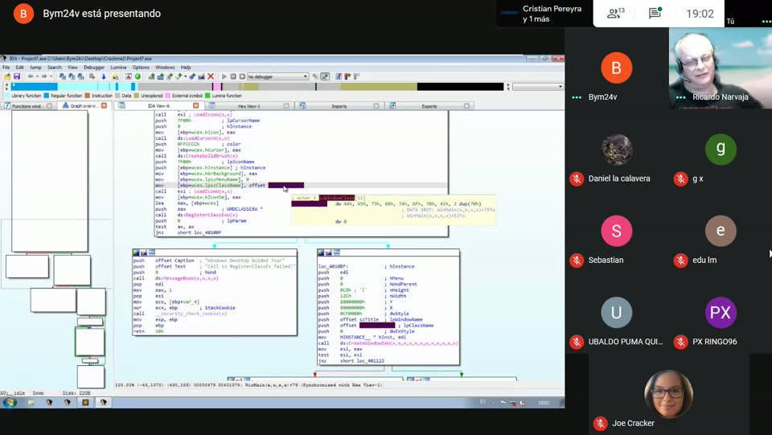
Doble clic. Ah, no. Mirá vos, no era ese. Espero que no se vea el bueno. ¿Dónde está? No lo veo. Ah, no. Si no, hace una cosa. Buscá para... Ah, ahí está, ahí está. Ese es el WinPro. Y tiene los mismos argumentos. Y lo mismo puedes hacer con el Windows para ver dónde. Sí. Ah, este se nota que es un poco más grande, ¿no? Pero eso es por el tema de las ventanas. Sí, pero es lo mismo. Correlo y fíjate con el Windows. O si no, para variar, podíamos hacerlo con el Result Hacker. Para la gente que no lo conozca, los métodos de búsqueda con Result Hacker. Evin, ¿hacemos con el Result Hacker? Vale. Sí, en vez de usar el... Claro, así cada objetivo vamos variando de herramientas, de tools. ¿De la ID? Sí, vamos a ver. Yo la verdad que no sé ni dónde está el Result Hacker, el Control ID. Bueno, y antes, hay gente que se ha unido nuevo. Antes hemos usado el Windows, que me han dicho que yo... Este no lo conocía, la verdad. Muy bueno, muy bueno. Encima, notice... Es una tool que no se actualiza nunca. Está desde 20.000 años y todavía es imbatible. Buenísimo. La usé yo en el primer curso de Oli hace... Sí, ya me acuerdo ya. Muy bueno, muy bueno. Y sigue estando igual. No se actualiza ni nada y sigue funcionando. Es una maravilla. Bueno, vamos a cargar el FIACA con... Project 7, eso es... Lo que pasa es que, a ver, aquí, por ejemplo, en este tipo de diálogos, no lo saca el Result Hacker. Entonces, aquí no podríamos... Podemos ver... Oiga, chico... Oiga, la estatua y el... Ese debe ser el chico bueno. Ese debe ser el chico bueno. Es que te dijo... Es que... Creo que dijiste tú a alguien que no había salido. Ese, ese... No, pero después le salió. Sí, a mí no me salió, no. Sí, sí. ¿No te salió? No, me refiero que no salió el Good Boy ese del Einstein. Ah, no. Entonces, algo raro. Algo raro existe. En este caso... En este caso, el Result Hacker no valdría. Para que, nomás que juntar las imágenes, los diálogos, cuando están hechas en Visual Studio y todo el rollo, esto es cuando se quedan en los recursos. Son los ministros de los recursos. Aquí... Va a ser que no. Entonces, el Windows tiene que ser...
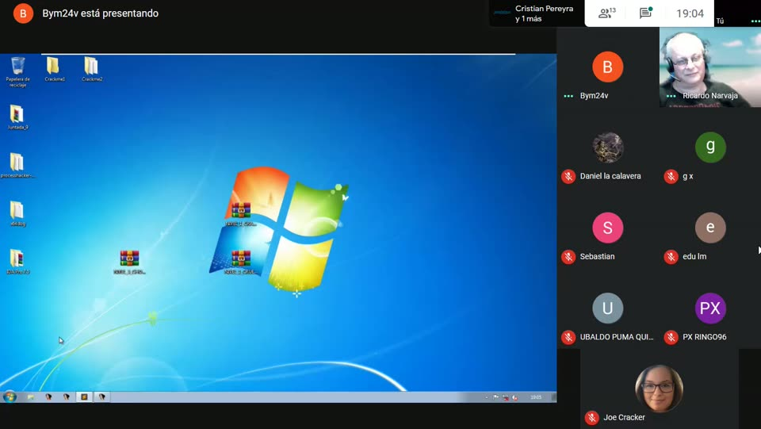
Sí, sí. Ahí va. La herramienta más adecuada. Por lo menos... Por lo menos puedes sacar la caja, el Control ID de la caja de nombre y de serial. ¿Ves? Que dice Control ID 7 de 1. Sí, sí. Es el nombre. Y el del check. Es una maravilla. Anotá los Control ID de nombre y serial. Sí. Vamos a ello. Vamos a crear un blog de nota. Como de costumbre. Sí, puedes anotar todos los control ID. Control ID que hay ahí, así ya directamente. Qué cara de loco que salía ahí. A todos le agarra tanto hambre desde que empezó la pandemia, de estar de ese víctima. A mí me agarra un hambre, engordé un montón. Antes, cuando trabajaba, no me daba ese hambre. Porque uno estaba, viste, sin hacer, está en la casa, y agarra la heladera. Cuando uno está distraído, no es lo mismo. Madreta pandemia está. Bueno. Y anotáte todos los Control ID. A ver, el de nombre, el de serial, el de check. A ver, el de nombre es el 6F, ¿no? Para que una ahí no vea bien. No, pero tenés que ponerlo encima de nombre, porque si no, no. Eso es lo que tiene, que no queda enganchado, tenés que pasar. 7 de 1. 7 de 1. 7 de 1, sí. Ya tenés que fijarte y después... Claro, cuando mueves el ratón ya se te cambia de la ID. Pero por lo menos ya te dice el valor, eso está bueno. 7 dedos. 7 dedos, sí. 7 dedos. Yo tengo 10 dedos. Yo tengo 10 dedos, ¿no? 7 dedos. 7 del check. Y... 4 de 0. Apriete, apriete. Apriete y check. Incorrecto, nada que ver. Ya sabes que ahí... Ya sabes la tatuada. ¿No? Mola cantidad. Podemos hacer lo mismo de siempre. Buscar... Inmediate fauner, sí. 7 de 1 sería...
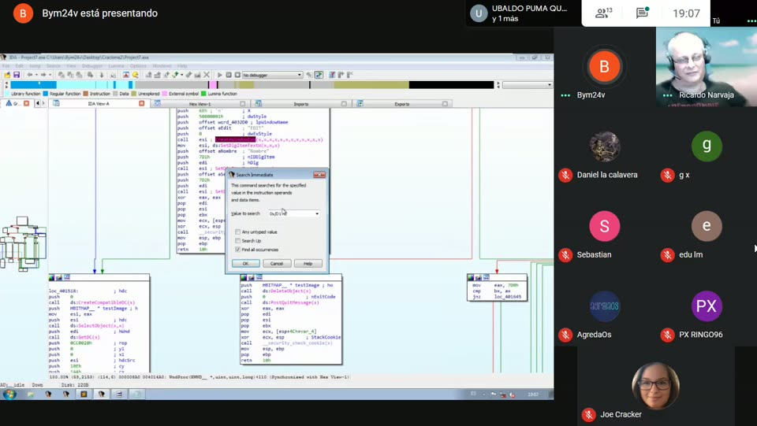
7 de 1 sería el campo de... ¿El nombre? Nombre, el nombre. Ah, el nombre, sí. Vamos a ir poniendo... Bueno, corremos. Bueno, hay unos cuantos lugares. Claro, fíjate que hay unos cuantos lugares porque ahí cambia también. Viste que en un momento te dice el mismo error ahí en la misma caja de texto. Cuando vos pones incorrecto y todo, tienes que usar el mismo control ID. O sea, cuando vos pones check y te dice incorrecto, tienes que usar el control ID. Es decir, todos esos lugares son los lugares donde accede a los... Al... Al... A ese control ID. O sea, que ahí tenés GetLG Intentex. El primero de todo arriba era donde lee. Arriba, ¿no? El primero que viste. Bueno, este sería el mensaje bueno. Sí. Y aquí sería el incorrecto. Hola, Joe. Nada que ver. Estamos con el del FIACA, con el Project 7. El otro ya lo solucionamos. El 1 ya lo solucionamos. El siguiente, el siguiente estamos. Bueno, el otro había que hacer un ZOR entre la clave tuya y... ¿Cómo era? Messing in bytes. Byte por byte. Sí. Y ahí daba el resultado que... Lo comparaba con una cadena que estaba ahí. Entonces, Zoriando... Ahí está. Zoriando byte a byte. Con eso te da Readersoft de Storm. Con eso. Ese ya está. Ese ya está. Bueno. Y ahora tenemos este, que es el Crackmy FIACA. ¿Cómo llegaron a la función? Fíjate que... ¿Eh? ¿Cómo llegaron a esa función? Utilizando el Windows, una herramienta para ver los controles ID que tiene cada... El control ID lo sacamos, pero digo a la función en la que están dentro. ¿Era por WinPro? ¿Habían dicho? En los que son así con CREA y Windows es WinPro. Pero igual... Hasta esta de aquí. Estamos ahora. Sí. No, no. Eso lo podés hacer buscando en la constante. Pero en la primera que estábamos de todo, en todos los argumentos que pasan, hay un momento que le pasa al WinPro. En el CREA file, el primero ahí. Estaba de todo ahí. No, ya no sé dónde estaba. No, tiene que ser la referencia de eso. La referencia de... Está de aquí. Fíjate que hay una referencia. Andar al primer bloque. Andar al primer bloque de todo. Al primer bloque. Y buscar la referencia de WinPro.
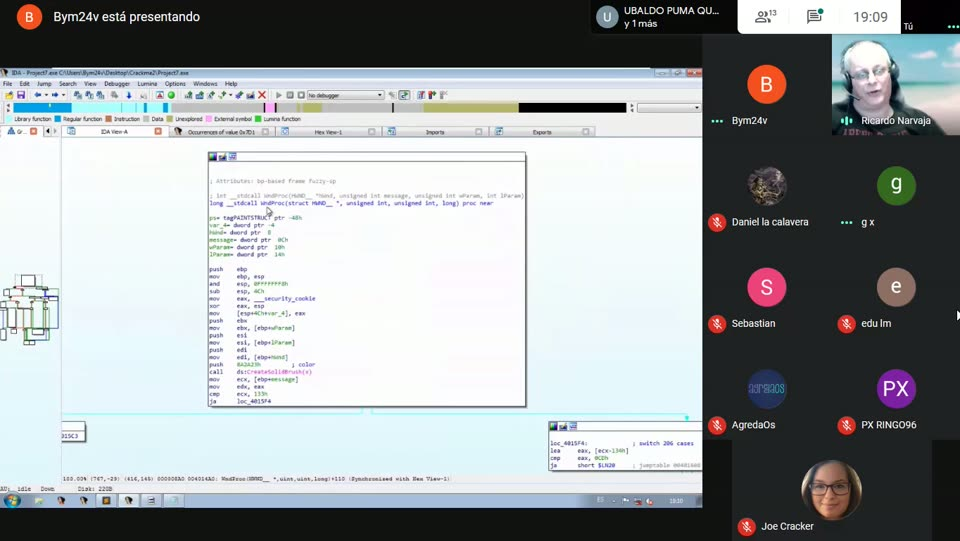
Y buscar la referencia de WinPro. Y va a saber que hay una que está arriba de CREA file. Ahí. En algún momento le pasa el argumento ese. En esa estructura. Aquí está el WinMail. Y aquí es donde crea. Ahí está. Siempre arriba de CREA Windows está la llamada al WinPro. Que lo setea. Ahí. Antes de llamar a CREA Windows, que está ahí abajo. Ahí está. Entonces, lo que ha comentado el chaval es que cómo ha movido ahí. Bueno, hemos buscado la constante del botón. Con share inmediato de balúe. Bueno, en este caso aquí no. Pero tenemos que estar aquí. Inmediato de balúe. Encontramos. Buscamos este. Y no sale la ventana de la ocurrencia. El primero, todo. Ese primero debe ser donde entra el chaval, sino que tipea. Me ha venido para abajo. Y bueno, aquí se ve el set, diálogo de ítem y el get. O sea, aquí es donde trae y aquí es donde manda. Lo nudo. Y aquí están las dos ventanas. Si baja un poco más para abajo, la de pintado. Y aquí se ve la de genial, increíble. Mira, nunca había visto esto de FAQ. Pero supongo que lo ponga así. Generate seria. Y porque tiene los símbolos. Como tiene los símbolos, tiene los nombres de las variables que estaban en el code. Es claro, es verdad. Sí que es verdad. Claro, digo, esto de FAQ, ¿qué es? Yo le puse ese nombre. Bueno, ya vimos la otra vez los retos que vimos, ¿no? Que lo del bit flip era cuando cargaba la imagen y todo el rollo y al final la mostraba. Sí, esa era para mostrarlo. Las anteriores la cargas y esa era para mostrarlo. Supongo que la use cuando pasamos por el sitio correcto. Que sea la de increíble. Pondrá la imagen de Einstein que hemos visto. Y fíjate, la imagen tiene que tener, la imagen tiene que tener, la imagen tiene que tener, volve, vuelve para atrás. Uno de los argumentos de la imagen tiene que ser el, a ver, la imagen. Ese Hint, ¿qué valor tiene? ¿Lo ve en negro o no lo veo? No, es que no está corriendo, está en estático ahora. Ah. De acuerdo, pero aquí le pasará la ID de la imagen. Ahora todas... Ese no, pero tiene que haber un lugar donde diga, uno de los argumentos tiene que ser el control ID de la imagen. Tiene que estar por ahí. Si no me equivoco. Name. Ah, Name. Name. Ese, seis C. Name, seis C. Debe ser ese. Fíjate, el Name.
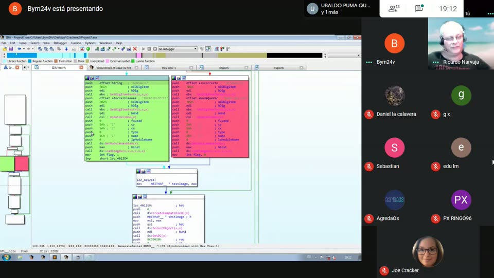
Ese, seis C. Fíjate ahora de vuelta en el control ID del seis C y en el otro, en el otro de este lado que tiene el seis. Seis B. Name. Fíjate en alguno de las imágenes, a ver si tienen ese rango, las imágenes con el Windows C. Pasale el mouse por arriba a ver si el control ID tiene ese rango. El seis B, seis C, en el Windows, con el Windows encima de las imágenes de la cara mía, esa que hay ahí. A ver, pasale el Windows C, a ver si es ese rango. ¿Qué dice control ID? Nada. Sí, no dice nada. Bueno, cuando dice la imagen, no dice nada. No dice, no. Cero, cero. Qué raro. Qué raro. Supongo que sea... A ver, pone check, a ver y hacelo rápido sobre la que aparece. Apreta check. ¿Y ahí? Cero, cero, cero, cero. Cero, cero. Bueno, pero... Qué raro. 720 parece que pone, ¿no? A ver, a ver, ponlo rápido. No, no, pero esa es la del botón. 7, dos... Cero es la del botón, ¿no? Ah, vale, vale. Pero en el ResurHacker nos decía 6B. A ver, fíjate en el ResurHacker las imágenes. Estaban ahí. ¿Qué decía? Sí, 720 es la del botón. Sí, tira razón, sí. Fíjate de vuelta ahí a ver si no está. 101, ese es el número, 101, esos son los números esos en decimal. Pasar 101, 107, esos deben ser los números esos. Pasar 101 a Hexa y debe ser eso. 65, el otro 107, ese es ese. Y el otro, lo de chico bueno y chico malo, deben ser 107 y 108. 7. 6B. 6B. Claro, ahí está, ese es el número, el número del ID. Y el 6C. 6C es el good boy y el 6B es el bad boy. Entonces ahí sabes cuál es. El chico bueno, el chico bueno, ponele la cara a Einstein, a ver cuál era el del chico bueno. Sí, el del 68, sería el 6C que hemos visto aquí. Pero cuál era la imagen, el del chico bueno, el 6C, fíjate en ahí, ponele ahí. El 108, 6C. Bueno, ese es el chico bueno. Sí, esto que pinto yo aquí en verde y este que estaba aquí en rojo. Sí, listo. O sea, que ese es el que carga la imagen buena o mala y después la carga, pero la muestra abajo. Ese es el puntero, ¿no? Que carga la imagen.
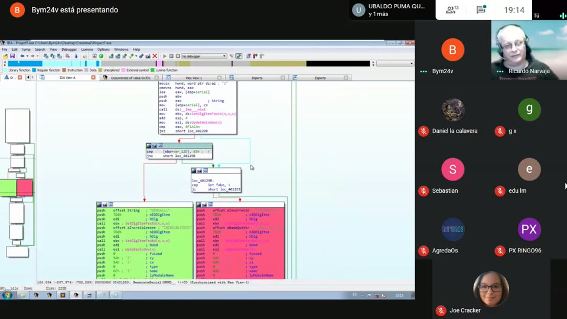
Sí, sí. Claro, aquí la carga y lo vimos aquí. Ahí la muestra. En otras extraoficiales lo vimos aquí. Bueno, esas son sus cosas internas y lo voy a dar muy bien. Y la muestra. Ajá. Bueno, pues ya sabemos que el chico llegará ahí. Hay que ver cómo. Eso, a ver. Aquí tenemos el get dialog item. Ahí está el serial. Este sería el serial. Vamos a renombrarlo. Ponemos serial. Aquí es donde se refresca. Es cuando le meten un set. Te le meten, por ejemplo, incorrecto, verdadero, lo que sea, supongo. Ajá. No, eso debe ser que si es más bajo. Si es más bajo, debe decir... Si le pones uno más bajo, ahí ya te debe decir algo mal directamente. Porque es más bajo. Bueno, aquí pone compara EAS con Fiaka. Bueno, ahí tenés algo. Por ahí va, por ahí va, por ahí va. Por ahí va la cosa, por ahí va la cosa. Por ahí va la cosa. Fijate de dónde sale LEA. Volvé, volvé, volvé para atrás, que lo moviste mucho. Volvé para atrás, que donde estaba el Fiaka está la cosa. Sí, sí. ¿De dónde sale? El que compara con Fiaka. ¿De dónde sale LEA-X? Ese. Sí, de la string. De la string de... O sea, bueno, ese es ASCII lo carga aquí. Aquí está. Qué bueno. Hay que ver. Bueno, vamos a poner aquí un... Ah, porque tiene U-Toy. Tiene B, tiene W-Toy. Lo que hace W-Toy es como A-Toy. ¿Se acuerdan? La A-Toy, la función A-Toy pasa de ASCII a íntegro. Esa W-Toy te la pasa de U-Toy, de ancho, de formato de string ancho a íntegro. Entonces eso lo que hace es agarrar tu string y pasártela de formato ancho, porque esto debe trabajar con Unicode. Ves que es D-L-E-G-I-T-E-X-W, es el formato Unicode. Entonces te la pasa. O sea, que agarra lo que vos pones y te lo pasa la string que vos pongas, te la pasa a número. El resultado es en íntegro, pero en exa, ¿no? En exa, sí, porque en este caso entra directamente en exa, sí. Bueno, ya tenés algo. Y W-Toy es con M-Toy, pero lo único que es con strings. Es igual, es la misma función, lo único que es para la cadena que se va a convertir, pero lo único que es para W-Toy es para cuando es formato Unicode. Es que es W-Char.
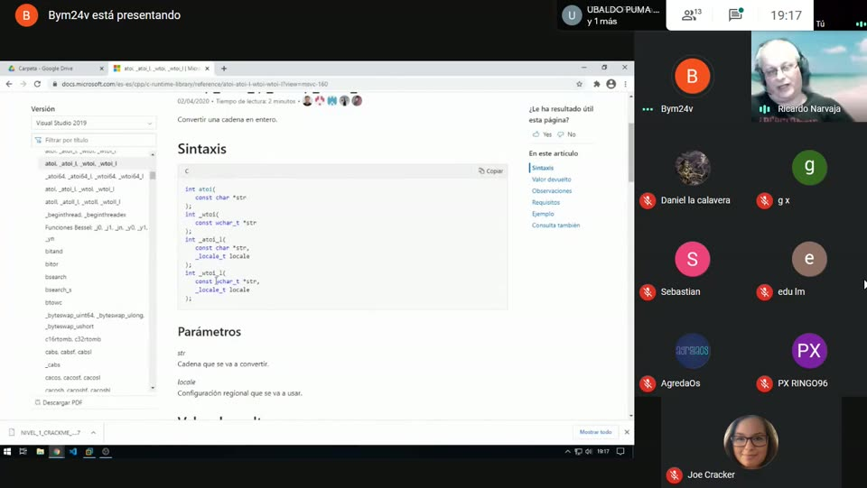
String, cadena que se va a convertir. Sí, ahí pones. Te la convierte en un número. Bueno, aquí también ejemplo. Lo convierte con FIACA. FIACA es 98, 98, 98, 98. Así que ahí tenés algo ya. Voy a poner un break por ahí a ver qué pasa. Ponle un break por ahí a ver. Sí, ya. En la comparación. Sí, bueno, y mi string lo va a traer aquí. Aquí el mundo lo va a cargar, ¿no? Vamos a poner aquí. Bueno, aquí está comparando con cuatro. Que no sé. Ese será el tamaño. El largo. El largo, sí. Vamos a correrlo aquí. Y vamos a ver lo que dice. Nombre. BIM 24V. No, PP. PP. PP. Y aquí vamos a poner, pues yo que sé ya. Vamos a poner 5, 6. No, sería el ponerle número. Ponerle número porque te lo convierte a un número. Sí. Ahí te queda. Todo a uno. Ponele que sea. 41, 41, 41, 41. Está bien. Bueno. Ahí está. No pasó nada. Debe haber algún otro chequeo más antes. No paró. No, no. Se habrá ido por otro lado. Aquí hay otro get. Es que este puede ser el primero y este puede ser aquí. Hay otro. Aquí está el name. También quedó lo comparado. Le añade 18. 18 extra. Creo que lo he visto. Hay que ver. Uno para el nombre y otro para el serial. Sí. Ahí paró. Aquí. Bueno, ahí donde lo... El serial, arriba, en serial, arriba, en serial. Donde dice serial, arriba. Ahí. ¿No entró? Sí, pero no entré todavía. Ah, bueno. Ahora. Aquí lo ha traído el PP. Bueno, aquí está en unico. Ahí ya entré. Tiene que poner, tiene que poner, como era. Ahí está. No, pero si lo pones como A, también tenés la posibilidad de ponerlo como unico. Creo que U. No, U es un define. ¿Cómo era unico? Era un define. Era... Se me olvidó cómo era unico. Bueno, ya lo vamos a sacar. String, String A, unico. Bueno, yo lo sé. En el menú está Edit, String, unico. No me acuerdo cuál es la tecla, pero está ahí.
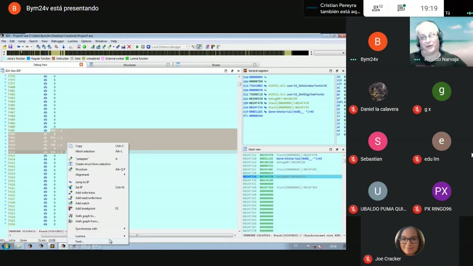
Si vas a Edit, ponés a Edit, String, String, en el medio, unico. String, String de vuelta. Ahí está, unico. Lo tenés que marcar, marcar al principio. No, no marcar, no. Ponés el cursor en el principio nomás. El cursor en la primera. Ahí. Edit, String, unico. Bien. Ahí está. Qué bueno, qué bueno. Buen tip. Sí, señor, buen tip. Pero no tiene atajo de teclado, por eso no permite que no está el atajo de teclado. No sé cuál será. Sí, sí, no sale. Bueno, y aquí está comparando, ¿no? Ya con el... El largo. Claro. Entonces, como es... Ah, pero pusiste cuatro nomás y tiene que ser... Claro. Si es más bajo, igual te tira afuera. Tiene que ser más largo. Tiene que ser más largo porque es un J. Compara cuatro con EAX, o sea, con lo que has puesto. Y como Pepe tiene cuatro, Pues te tiraría afuera. Tiene que ser mayor a cuatro. Igual puede... No es necesario reiniciarlo porque mira que vuelve a arrancar. Dale de vuelta a Run. Sigue... Te vuelve a pedir. Dale, ponele de vuelta. O sea, es un loop. O sea, que puedes ponerlo de vuelta. Ahí está. Ahí está. Ahora sí. Ahora cambiará el bicipload. Ahora trae cinco. Vale. Lo siguiente. A ver. Ahí está Pepe. No metes a L. Vale. Ya recoge el propio byte y se lo añade a L. Es decir, Pepe es 70, la P es 70. Y coge el propio Pepe, es decir, la P. Y se lo añade. Ah, las va sumando. Suma dos bytes. Fijate que uno es más cuatro y otro el primero. Son dos bytes. El primer byte con el cuarto byte. Con el cuarto byte. Al, ¿cuál es el primero? Con el final. Claro, debe ser el quinto. La P más la P. 0, 1, 2, 3, 4. Claro, el último que pusiste. Y lo suma con el primero. Suma los dos bytes. Y eso lo compara con... Ahí al final, fíjate que eso está en EAX. Al final lo compara con un valor. Ah, lo guarda ahí. Lo guarda ahí. Lo guarda ahí. Lo guarda ahí. Pone suma de bytes. Suma de bytes. Ah, lo voy a comparar por ahí en algún lado. Vale. Ahora lo puse a... Bueno, aquí va a traer el otro.
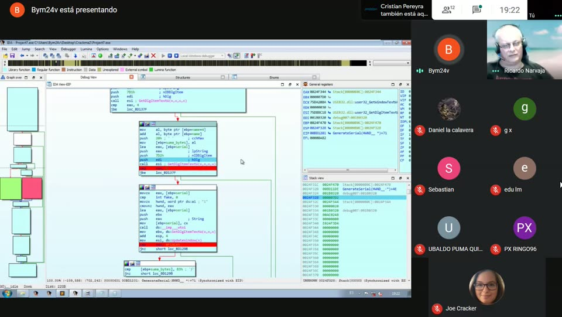
Yo he puesto 41, 41, 41. Son ocho bytes. Son cuatro bytes, pero son ocho dígitos. Y lo está comparando con eso. Está bien. Ah, está bien. John Bellow. Sí, lo compara cuatro también, pero como yo puse... Bueno, no se ve. Ah, no se ve porque ya... Salta si es menor o igual, ¿no? Sí. Sigue. Sí, es lo mismo. Aquí lo está pasando bien. Mueve. A ver, al principio... Exacto. Joder, qué bueno. Mueve a EAX el primero, el primer byte. El 41, el 4, movió a EAX. El primer byte. Ese está en EAX. Fake es cero. Fake, ¿cuánto vale? El 34 es el 4, exactamente. Me movió el primer byte. Y Fake, ¿qué es? Porque fíjate que Fake te tira afuera. Es una de las cosas que te tira afuera. Si Fake no es uno, te tira afuera. Hay que ver qué es Fake. Fake es cero. O sea, es cero. Fake es cero. Por eso, te va a tira afuera. Pero fíjate en dónde varía. Hacerle X ahí, a ver dónde cambia. Porque en algún lugar... A ver, préstale X ahí. X, para que salgan todas las referencias. Ah, bueno. Ahí está. ¿Ves que hay un lugar que mueve a U? O sea, es como un contador, parece, ¿no? O ese. Fake es general, sería el 1. Es como, sí, es como un boleano que está por ahí. Ah, bueno, pero tenés que fijarte cuándo se pone a 1. Fíjate cuándo se pone a 1, porque a 1 tiene que valer. A 1, uno lo compara con 1, mejor dicho. Él tiene que ver dónde mueve el valor 1. Dónde mueve el 1, porque hasta ahora vale cero. Dónde mueve el 1, pone de vuelta X. Ahí. Y ahí es donde mueve el 1. ¿Ves que dice el tercero? El tercero mueve 1. Tercero. Y le bajo. Ese mueve 1. Estar 2 son en la 1 Pro y el de arriba son en la 10. Esa es que es donde estamos, en la función en donde estamos. Bueno, pero ¿dónde mueve el 1? ¿Dónde lo pone a 1? El comparador y donde lo mueve. Dale doble clic a ver dónde lo mueve. Ahí, bueno. Quiere decir que ahí, ¿de dónde viene? Ese lugar tiene que pasar, porque si no pasa, no lo pone a 1. Tiene que ver de dónde viene.
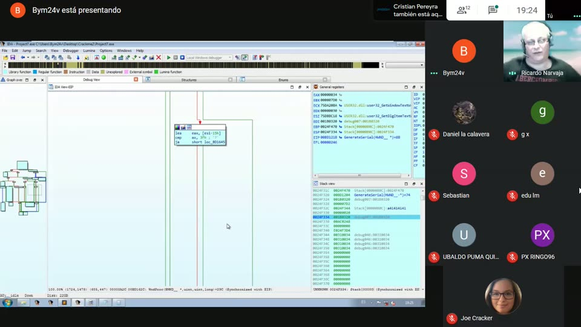
Ahí hay otra cosa. Hay otras comparaciones que hay que ver por qué. Compara con T. Ahí tiene que ser. Compara con T. Hay que ver cómo llega ahí. Un switch de 206K. Hay que ver cómo llega ahí. O sea, si no pasa por ahí, te va a tirar afuera. Porque por más que sea lo que sea. Bueno, seguí mirando. Igual, después ya sabemos que hay que ver eso. Pero seguí comparando. Después, cosa te queda ver el FAQ ese. Pero seguí mirando el serial. El FAQ es el FAQ. O sea, si solamente te existe todo correcto y solamente te queda el FAQ, bueno. Lo visto. Vale. Seguí adelante. Aquí es donde lo pasa, ¿no? O sea, aquí está cogiendo DSX1. Ah, 1 que diga que está en Datasendment. Lo pasa aquí. Bueno, que esto es plan de hardware, el handle, ¿no? Del 31. O sea, bueno, le está cogiendo esa decimal de eso. Del 31 y del 1. Ojo con eso, ¿no? 5-4. Está comparando. A mí me mata ese color negro. Sí, es que no se llega a distinguir, ¿no? No se puede cambiar el color. A ver, opciones. ¿Dónde da el color? Sí, colors, ahí. Dale un reset, tío. A lo mejor terminas antes. No, no, pero es que yo no he cambiado, ¿no? Está recién instalado. Sí, pero algo se cambió porque ese no viene así. En string te aparece como oscuro, la parte de string. A ver. Ya, pero no es cuando se lesionó. Sí, es que no se llega a ver. Cuando se selecciona, no se llega a ver. O sea, la concurrencia las pone en rojo, pero normalmente las pone en amarillo, ¿no? Eso debe tener algo que ver cuando corriste el coso para ponerlo oscuro, ¿viste? Que te quedó mal. Ah, puede ser. Sí, sí, pues puede ser. Si no se puede, pues nada. Ahora. Ahí está, ahí está. Así, sí, así se. Sí, con la verdad. Con la verdad, se te queda de por defecto. Es que antes he puesto un plugin, a ver si me lo convertía, pero se ve que ha modificado esa... Así sí se llega a ver bien. Claro, es que así como debe estar. Claro. ¿Y qué compara ahí? Que está el breakpoint. Ahora ve. No se ve. Sí, aquí.
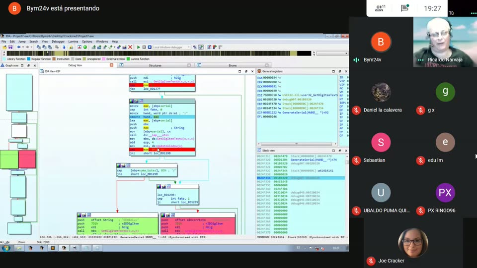
Abajo. Sí, acá. Ah, bueno. Es AX. Y es AX donde sale. Es el serial. Sí. Ahora tiene el valor de mi primer dígito. Ah, porque da es el WTOI. Hace el WTOI. Entonces EX va a tener el serial tuyo pasado a... El 41-41 pasado a... Aquí lo carga. Fíjate. Lo va a pasar por WTOI y va a devolver en EX el valor de 41-41. Pásalo por ahí con F8. Pues ese es el valor de F41-41 pasado a ese decimal. O sea que tiene que ser... Lo compara con Fiaca. O sea que tiene que ser Fiaca en decimal el que tenés que poner. Para poder que pase ahí. Volvé a dar la vuelta y volvé a poner 98-98-98. A ver si te da Fiaca ahí. Dale, dale el rum de vuelta. Total esto. Sigue. Es como un loop. Poné 98-98-98. PP1-98-98-98. No. Pero este no es el que yo había... Que yo tenía. Y si no, dale de vuelta. Dale el rum. PPP. 98-98-98. 98-98-98. Sí, tres veces. Ese Fiaca. Poné cheque a ver si llega Fiaca. Ya sabes algo. Que el serial tiene que ser Fiaca. Si es que compara ahí. Cuando pasa por WTOI. Ah, no. ¿Por qué no te quedó? Porque debe ser... Debe ser que hay que ponerlo en Hexa directamente. A ver, poné Fiaca directamente. F1-A-C-A. Debe ser así nomás. Directamente en Hexa. Dale el rum de vuelta. Debe ser en Hexa directamente. Supongo. A ver. Poné F1-A-C-A. Si no hay que fijarse bien. Porque yo no me acuerdo. Si es eso. Bueno, pasa. No. A ver. No, no. No. Entonces quiere decir que ahí hay que fijarse bien como... Que es lo que hace. Ahí yo lo estuve mirando con el X64. Y cuando llega la parte donde dice el mob...
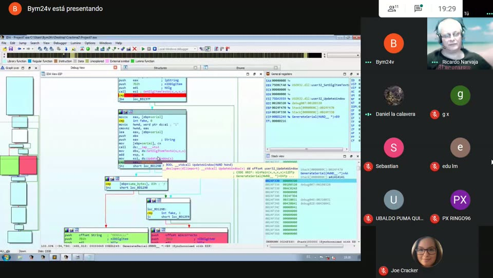
Si, el mob te lo cambia. Te cambia algo ahí. Bajo del FAQ... Te está cambiando. Te mueve el 31 a la primer carácter. Claro. Te lo rompe. Te lo rompe. Todo aquí. Claro. En el FAQ 0. Fíjate que compara FAQ con 0. Que en el 0 te lo rompe. Quiere decir que... Esto en el 0 no va. El FAQ 0 no va. Tiene que ser FAQ 1. Porque ve que si FAQ es distinto de 0... Sigue, pero en el 0 no va. Hay que fijarse... Acá todo el tema está en ese FAQ. A ver dónde carajo está. Que valga 1. Hay que fijarse. Dónde vale 1. Con 0... Sabiste que no rompe. Que el FAQ valía 1 es con toda la movida que había antes detrás. Y bueno, hay que fijarse dónde lo mueve el 1 es y dónde sale. Hace clic en la flecha roja ahí. A ver dónde viene. En la flechita roja, padre. Ahí, sí. Bueno. Ahí te sale. Ahí. Anda pintando todos esos lugares y anda pintando el camino. Hay que ver ese caso de dónde sale. De dónde viene eso. El caso 513. Y seguir para arriba. ¿De dónde sale eso? Bueno. Miren por aquí. Hay un... Uy, qué feo que está eso. Este es un ayuntable, ¿no? O sea, la tabla donde tenga el switch. Es EA. En este caso, donde EA x 4 tal. Viene de aquí. Por aquí, ¿qué pasa? Y fíjate, fíjate. Sí, seguí para atrás. A ver dónde viene, ¿no? Seguí un poquito más para atrás. Aquí y... ¿Qué es ese x? ¿De dónde sale? Es un mensaje. Bueno, es un mensaje. Bueno, ¿qué mensaje es? A ver, fíjate. Que no tengo ni la maldita idea. Y bueno, fíjate. Hace clic derecho. Hace clic derecho y pone el número. A ver, 133. ¿Qué es? El 133. El mensaje es 133. Clic derecho. Encima es 133. Y pone la M. O lo sé. Use Standard Symbolic Contact. Pone ahí. WM. CTL Color Edit. A la mierda. Qué feo que está eso. Bueno, pero tiene algo que ver. Debe tener que ver. Ponelo ahí. Y después, ¿qué más? Si es... O sea, es como que hay que pasar algo en el mensaje. Hay que pasar. Hay que venir de otro lado. A ver, seguí un poco más. A ver.
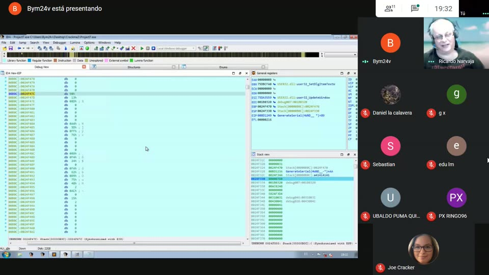
A ver, seguí. Si es cero, ¿qué más? A ver. Si va así. Ah, si es más alto. Compara si es más alto. Ni siquiera si es cero. Ajá. Tiene que haber uno que sea que es igual. A ver. Ese es igual. Es más alto. Dale uno más. A ver. Ese es SX. Ahí está. Compara SX con 0F. Ve que hay otras cosas ahí. Simboles Contact. M Paint. Bueno. M Paint. Ahí puede tener que ver. ¿Ves? Tiene algo que ver con Paint. W de coma. O sea, que hay un Paint y un C. un Command dentro de un Paint. ¿Y después? Por ahí no va. Fíjate que para ese lado no. Sí, pero este lado no. Bueno, aquí está el chatbot. Pero esto no es parte de eso. Tienes que fijarte bien de dónde viene. Sí, sí, sí. No, si viene de... Hace una cosa. Poné un break por ahí. Dale encima. Debe haber alguna parte del coso que va a hacer clic y se pasa por ahí. Dale. Poné un break por ahí. No, no. Donde pasa el FAQ. FAQ igual a uno. Ahí nomás. Debe haber alguna parte ahí. No es mala idea. El FAQ. ¿Aquí? Ahí. Sí, poné ahí. A ver si... Dale run a ver si hay alguna parte que pasa por ahí. Cuando pases el mouse por arriba o hagas clic o alguna cosa. No sé yo. Bueno. Cuando le des clic a la foto. Cuando le des clic a la foto. Ahí tiene algo que ver. Entonces ahí... Bueno, entonces quiere decir que se pone... Esto sí quiere decir que si vos le das clic a la foto y ahora seguís. A ver. Pero ahora entra a generarte cereal. Cuidate aquí y tomate. Entra a generarte cereal. Bueno, FAQ ya es uno. Claro, ya FAQ es uno. Claro, entonces quiere decir que no hay que apretar el botón check. Hay que apretar la foto. ¡Qué trampa! No hay que apretar el botón check. El botón check es una trampa. Hay que apretar la foto. Está el 1 y el generarte cereal. O sea que el generarte cereal tiene dos referencias. Una a la buena y otra a la mala. Fíjate, el generarte cereal debe tener dos referencias ahí. El X ahí. Si haces X en generarte cereal. Debe tener dos referencias arriba. En la función ahí. Debe haber dos lugares. Claro, uno es el que viene del botón check. Y el otro debe venir de ahí. Cuando apretás la foto. ¡Oh, amigo! ¿Eso sabe cómo se hace? Mirá, para hacer clic ahí. Tendiendo apretado shift, hace doble clic. Tendiendo apretado shift. Hace doble clic en uno y en otra línea.
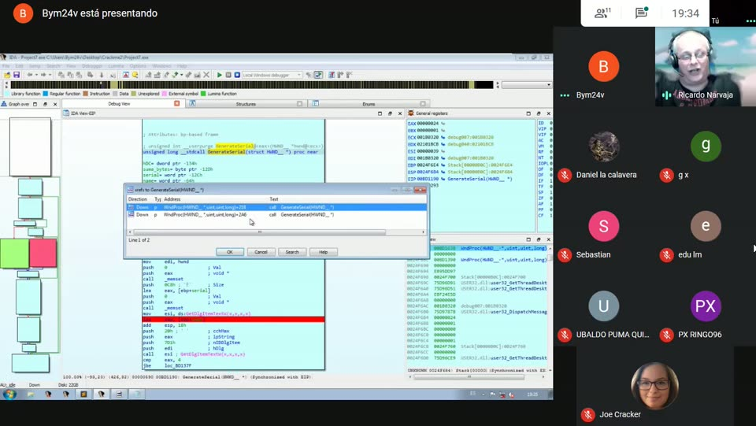
Sin soltar. Hace doble clic y doble clic. Te tiene que cambiar, ¿ves? Entonces ahí ves sin necesidad de que se cierre la ventana. ¡Oh, amigo! ¡Oh, amigo! ¡Mola! ¡Qué bueno! Mantén el shift. Claro, para no tener que estar cerrando, claro. Si hay una lista muy larga, vas mirando. ¡Qué bueno! ¡Clic! ¡Mola, mola! ¿Ves? Están los dos lugares. Entonces uno entra por acá. Entonces ahora tenés más chance. Porque ahora fue que vale uno. Y ahora... Ah, pero no sé si cuando apretaste la foto, ¿qué señal tenías puesto? Creo que no había nada, creo. Bueno, volvé a ponerle el número y me volví a apretar. Creo que no había nada. Sí, tendría el nombre y serial ese que tiene, estándar. Tienes que volver a poner de vuelta y apretar la foto. Y pone 98, 98, 98. A ver, check. Pero no, check, la foto. Sí, está bien. Ahí está. A ver, ahora. Qué tramposo este Ricardo Chotto. Joder. Ahora Faké vale uno. Así que ahora tiene otra cosa. A ver, compara con Faké vale uno. Y ahí está Fiaka con Fiaka. Ahí ya vamos bien. Y ahora... Ahí ya está bien. Está bien. Y ahora... La sumatoria de los bikes. Ojo, la sumatoria de los bikes. Esa es otra cosa. Acordate que sumaba el primer bike con el quinto. Tiene que dar 83. Esa es otra cosa. Tiene que dar 83. La sumatoria daba 0. Tenés que fijarte que de 83 la sumatoria del primero y el quinto bike. Hay que sumar dos cosas que den 83. O sea, un... 41, qué sé yo. 43, qué sé yo. Será 43 y 40. Será 41 y 42. A y B. A y B. Poné A, A, B, B. Poné A, A, A, A, B, B, B. Total es el primero. Poné así. A, A, B, B, B, B. Mayúscula. No, no. A, B, B, B. Poné. Arriba. No, arriba poné. Arriba. ¿Arriba? ¿Pone el nombre? Poné con mayúsculas, sí. Porque esos son los del nombre. Poné B una vez más, por si acaso. Y ahora abajo no es 5, sí. No importa. 98, 98. 98. Tiene que ser mayor la foto, sí. A ver. A ver ahí. A ver, es que no está corriendo. Y ahí paró.
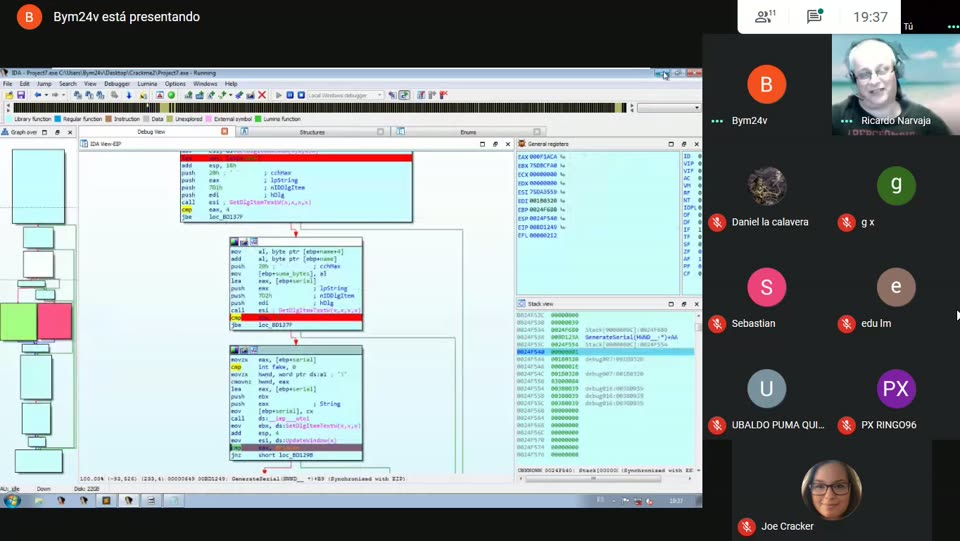
En AX tenemos FIACA. Sí, sí, ahí. A ver, funcionó. Y ahora después te va a salir el cartel. Lo que pasa es que no te da tiempo a verlo, pero... Ahora desde afuera. Voy a cerrarlo y lo vuelvo a abrir. Ahora se lo de afuera. Estaba pillada en ida. Y no me da cuenta. No, pero hacelo afuera. Hacelo afuera para que se vea. Ahí no lo vas a poder ver. Porque te va a parar el breakpoint. Y hacelo afuera. Porque en realidad el A, B, B, B, B, lo que hace es agarrar el primero y la B, que está en el quinto lugar, y te da como 41. Como la A es 41. Y la B es 42, la suma da 83. Y el segundo, el otro, ponerle serie al 98, 98, 98, que FIACA. Y apretá la foto. Eres un genio. Eres un genio. Este también tenía veneno, ¿eh? No le había que dar el cheque, joder. Había una trampita y había una trampita. ¿Por dónde habrá llegado ese que llegó, que llegaron y no le salió el cartel? Tenía trampa, sí, tenía trampa. Imposible. Claro, porque si no te sale, a lo mejor en un programa de verdad, a no generar, no es que sea un clic en una foto, pero a lo mejor siempre se queda un faque, por decirlo así, ¿no? En algún sitio oculto que no se te queda. Había un programa así para loguearse, digamos que no te salía un lugar para poder leer la clave. Tenías que hacer clic en varios lugares ocultos y ahí te aparecía la ventana de registro. No, no tenía ventana de registro, sino más. Tenías que hacer clic acá, clic acá, clic acá. Y recién ahí te aparecía como una estereta para que le salga la ventana. Muy bien. Una cosa nueva que hemos aprendido. Muy buena, sí. Muy buena. Si la gente tiene dudas o lo que sea, la verdad es que... Sí, preguntas, preguntas. La trampita que tenía es que tiene que venir por el lado de la foto. O sea, la foto como hace WS, hace paint, entonces a boludeces, no, no. Tienes que mirar. Si uno se pone a fijar y lo empieza a mirar, se va a dar cuenta que lo que hace es capturar el clic de las coordenadas. O sea, se fijan las coordenadas donde haces clic. Vamos, si no está Ricardo, nos tiramos aquí hasta mañana. A mí por eso no me salió la foto del genio ese de Einstein. Claro, porque vos viniste por el lado incorrecto. Claro, claro. Yo puse 98, 98, pero nada, no salía.
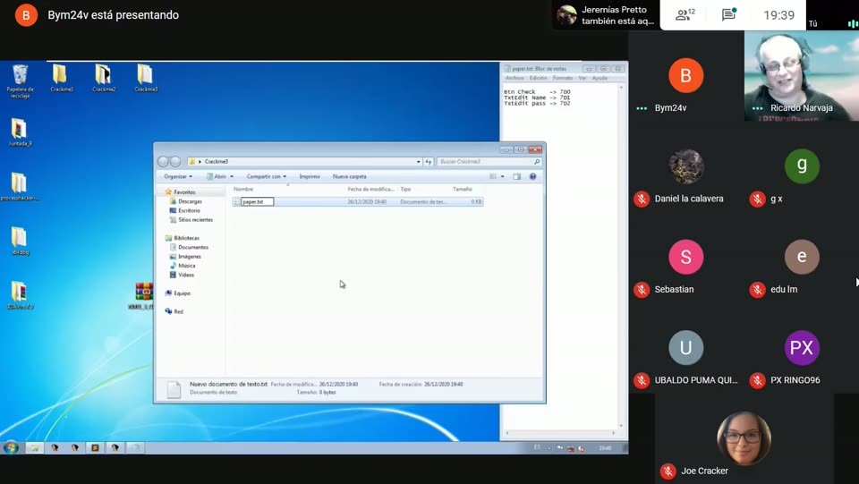
Ojo, ojo, que ahí no se puede hacer con el control ID, porque en realidad no estás cliqueando en la foto, estás cliqueando en un cuadrado, en un cuadrado que le decís el X e Y donde vos aceptás el clic. O sea, que es en realidad en una zona de la ventana y que justo está la foto, coincide. Pero me refiero, en realidad no estás cliqueando en la foto, estás cliqueando en un cuadrado que está justo en la foto, porque tiene las coordenadas X e Y para ver si vos clickeaste junto ahí. O sea, que es un botón clic. Es un mensaje de clic de botón del BMP. Estuvo divertido este reto también. Muy bueno, muy bueno. Tenía su trampa. Sí, sí, sí. Rejo, ¿eh? Muy bien, pues nada, pues ya nos veremos. Sí, ya subiremos el vídeo. ¿Qué pasó? Saludos a todos, disfrutad. Se va, J... GX. Bueno, espero que la pasen bien con nosotros y después vamos a subir el vídeo. Sí. Igualmente, venga, un saludo. Un saludo, sí. Listo. Chao. Suerte. Bueno, yo... Ah, ahora ya tengo un minuto. ¿Y qué quieren, ver el choteado? Denle nomás, no tengo problemas. Me parece que es mejor dejarlo para más de lado. Está deseando que suframos nosotros. No, no, sigan con el clan y creo que es mejor. No, porque si lo quiero dejar el choteado, lo quiero dejar para... Para un vídeo. Bueno. Claro, no, bueno, a ver, podemos ver el tercero, que es el que tenía aquí. Sí. Este será como el segundo, pero de diferente, ¿no? Sí, es parecido. Ese es un login, ¿no? Lleva ahí user y password. De hecho, ni... Ah, bueno, está aquí. Corriendo, digo, tiene hecho nuevo. No tiene nada. A ver. Bueno, no sé, es que la gente... Diga, que si quiere ver algo relativamente sencillo o igual de sencillo por el camino que vamos, o quiere, ahora que está Ricardo aquí, ver el chetao. Pero bueno... Eh, no, a mí no me hagan laburar, a mí no me hagan laburar. No, no, no, yo lo voy a decir. No, no, no, todo el espectador. Digo en chiste, digo en chiste. Yo me tomo todo en chiste.
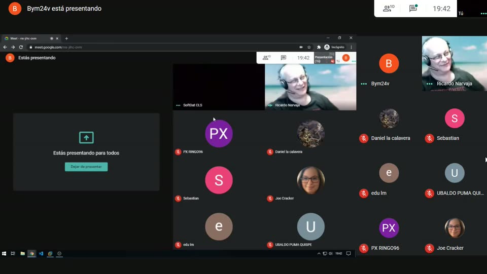
A mí me encanta. Según las fotos que pasaron, seguramente está un poco... Ese de la foto, si uno se pone ahí, sabe cómo te puedes envenenar con eso. Te puedes estar envenenando. En la sala que creo que estaba... Bueno, Oscar creo que estuvo, ¿no? Creo fue, o no sé quién estuvo también mirando ese. A mí no me hagan... Tienes que sacarlo ese. Pues no sé lo que... Bueno, dale, dale con el 3, ¿eh? Y con el orden, ¿sí? Sí, vamos con el 3. O quieren hacer un unpack me de los de sol y dar un unpack me, está bueno. Vamos a tomar un... Un segundo para ir al baño, ¿vale? Vale. Vaya, vaya, vaya, vaya. O sea que tengamos una... Vaya, vaya, vaya, vaya. Venga ya. Vaya, vaya, que no haya... Vaya catástrofe, no haya catástrofe. Joy, ¿qué hacemos? ¿Un unpack me? Se fue Joy. Estoy de vuelta, dice. Va y viene, se nos pierde. Chicos, ¿qué hacemos un unpack me? Están durmiendo, están durmiendo. Bueno. Fíjate lo que vos quieras, total. Si él no contesta, quiere decir que lo mismo. Estoy aquí, pero a media. Está ahí, bueno. Está en media, hay que ponerse los zapatos. Bueno, ahora cuando venga, vemos qué hace. Igual hay varias juntadas. Pero no veo foto alguna. ¿Cuál? El de 64, porque tenés que hacer clic en la cara mía, no en el check. Es un hijo de puta. Es un hijo de puta. Ese tenés que poner la cara, tenés que poner mayúscula, pero no lo podés hacer en el debugger, porque si no, no te da tiempo a mirarlo. Hacelo fuera del debugger para ver la foto, porque tiene unos segundos y se borra la cara, la foto. No te da mucho tiempo, tiene unos milisegundos. Hace un bugger el eterno. ¿Pero qué le estás poniendo? Le puedes poner el serial. Tienes que poner serial mayúscula AABBBB, mayúscula.
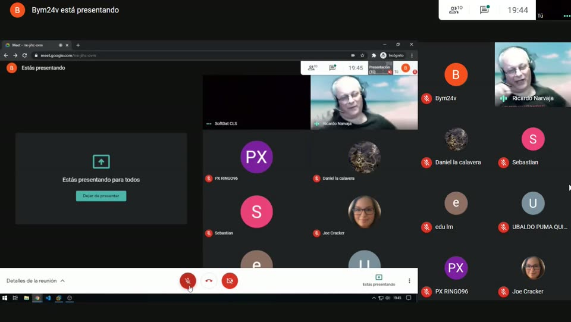
Y serial 98, 98, 98. Y hay que hacer clic por la... Lo que pasa es que si lo pones en el IDA no te da mucho tiempo, porque son unos milisegundos que se desaparecen seguidas la foto. Hay que verlo afuera. Es en el cartel. Porque tiene un tiempito. Cuando vos parás en el break, pues el tiempo sigue. No, no, tú no vas. Tienes que poner AABBBB, mayúscula. Porque la sumatoria del primer byte y el quinto byte, tiene que dar 83. Ahí había chequeado. Son dos chequeos, tiene. La sumatoria del primer byte y la sumatoria del quinto. No te preocupes, no te preocupes, Joel. Está grabando. Mañana subimos el vídeo y lo ves más tranquilo. Está grabado. Está todo grabado. Está todo grabado, así que mañana lo puedes ver tranquilo. Lo hicimos. Bueno, me voy a dejar un minuto, ¿verdad? Que me hago un cigarrico. Sí, sí, tranquilo. Bien. Estábamos comentando a ver qué hacemos. ¿Un unpack me o seguir el orden que habíamos dicho? Lo que decía la gente. La verdad es que el unpack me no tengo ni idea. Así que... Bueno, pero... Otra cosa que ahora, viendo esto, en este curso que estoy dando, Ricardo, ¿no vais a dar temas de exploiting y cosas de esas así o no hay la idea? No, no. Acá vamos a seguir todo con esto. Posiblemente por ahí alguno de virus, alguno, pero así como para mostrar. Pero no, de exploiting ya creímos mucho. Sí, sí, sí. Y hay mucho también en la página web donde... Vale, perfecto. Bueno, pero los unpack me está muy bien, ¿eh? Porque es muy completo. Tocas todo. Sí, y aparte el análisis todavía tenemos un montón de cosas. También, pues, estructuras. Más estructuras, un montón de cosas. Claro, es que a ver, para poder llegar al tema de exploiting como tal, pues tienes que pasar por esta etapa primero. Si no, obviamente cuando te metes a quedar un simple overflow, a lo mejor ni siquiera sabes por dónde empezar. Primero hay que aprender todo esto, el rol de sesiones, por aquí y por allá, off code, tabla, API y un mollón de cosas. Sí, vamos despacito, total, sí es divertido. Uno se va divirtiendo, aprendiendo, vamos practicando, todos vamos aprendiendo.
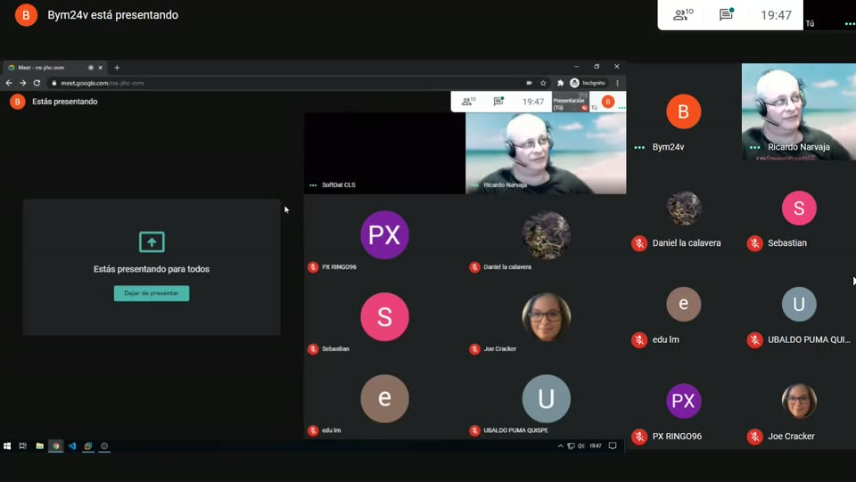
Y un día por ahí viene alguien que sabe y nos dice lo que nos falta. Y a ver, ¿qué va a ser? Es así la cosa. Vamos aprendiendo a poco. Muy bien. Bueno, si este mundillo es lo que tiene. No hay alguno para de... Ah, están escribiendo por el chat. Es que ustedes piensan llegar muy lejos. Que yo he dicho que lo estaba haciendo con el X64 de BG, pero que le estaban dando un bucle infinito. Sí, pero al final se dio cuenta que se pasa por ahí. Lo que pasa es que pasa, y es un tiempito que te muestra. Después vuelve a lo anterior, entonces no te da tiempo a verlo. Tenés que hacer... Una vez que encontrás el cereal bueno, tenés que probarlo afuera. No te dejan el debugger el tiempo. Es un tiempito muy corto. Que hasta que arrancás y todo, no te da tiempo de verlo en el debugger. O sea, después ves que pasa por el bloque que dice correcto y todo. Pero cuando lo querés ir a ver a la ventana, el tiempo ya pasó y se desaparece. No, no te da tiempo. A ver, el Joe acaba de llegar ahora, ¿no? Sí. Así que no ha visto cómo lo hacíamos con Ida. Mostrarle, mostrarle, mostrarle. Un minuto, total. A ver, un segundo, que estoy ahora liado. Tranqui, tranqui, bien. Sí, total, acá estamos para verlo. Vamos a hacer un repaso por si... No hay problema, hombre. Estamos en familia. No hay prisa. No hay problema, no hay problema. No hay problema. Bueno, la verdad es que hoy también se ha hecho falta al Snack, ¿eh? Lo que pasa es que el Snack está más liado que la Patron. No, el Snack lo tienen ahí, los latigazos. Antara a tope. Lo tomaron, lo tomaron en el trabajo y está bueno tener trabajo. Porque la verdad que en esta época no tener... Pero lo agarraron de clavo. Es que Snack es un diamante en bruto, Majo. Ahí saben lo que hay. Donde enganche un buen trabajo va a estar muy bien. Sí, sí, sí, sí. Lo que pasa es que él tenía que tener un trabajo primero donde ya demuestre todo bien. Que la gente pierde... Viste que bueno, la gente también cuando te toma, ven, ¿no? Y dice, bueno, este ya estuvo en un trabajo y estuvo todo bien. Entonces ya pierde el miedo, ¿viste? Que te toma también, ¿no? Porque es así la vida, ¿viste? El empleador, ¿viste? Trata de ver todo, ¿viste? Entonces cuando ven que ya trabajaste en varias cosas, te vuelves a tomar. Es más fácil. Yo creo que ahora en los próximos trabajos que él tenga va a tener buenísimos trabajos porque es muy capaz.
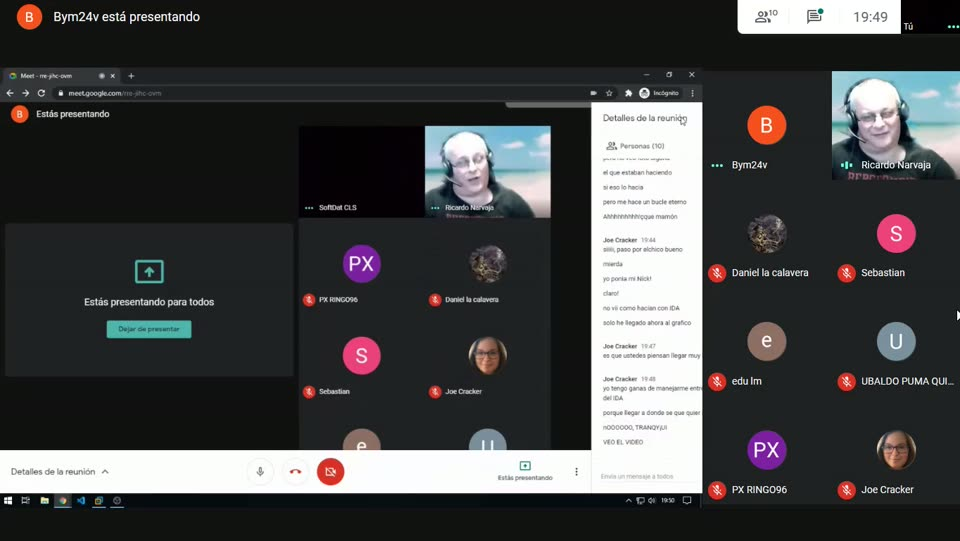
Eso, eso. El primero era entrar en uno, en uno, había que entrar en uno. Y ahora que está en uno, ya va a tener la posibilidad de pasar a otro. Que dice que... No sé cómo hacen ustedes para ver las cosas. ¿Qué cosas? Dice que llegó hasta la constante esa de... Mostrále. Bueno, hacemos un resumen de todo. Mostrále ahí el Generate Serial, que la función Generate Serial tiene dos referencias. Fijate que la función esa, Generate Serial, tiene dos referencias. Una, y ahí es donde está la trampa. Porque... No sé lo que estábamos ahí mostrando. La función del Serial, esa Generate Serial, viene cuando apretas el Botón Check. Pero hay otras referencias. Fijate que ahí está la trampa. Va a hacerle X ahí. Si haces X, tiene dos referencias. Está allí. Una es que viene el Botón Check y otra viene de acá, esta referencia chota. Y esta referencia chota, si es X, sí. Y esta referencia chota es la que hace clic cuando apretas la cara, viste. Si ves más arriba te vas a dar cuenta que compara X, sí, eso que compara más arriba, esto. Son las coordenadas ahí arriba. Cuando dice compara con 3F, con 6A, son las coordenadas de X, sí. De donde estás haciendo el mouse, el clic. Entonces, eso te lleva ahí. Lo importante aquí era que antes... El FAQE ese tiene que valer 1. Exactamente. El FAQE luego dentro en esta función, aquí con el ATOI, se destruía todo. Y no pasaba por ahí. Él dice que está aquí. O sea, la sumatoria... Eso es la sumatoria. Esa es la sumatoria del primero y fíjate, de más arriba. Esa es la sumatoria de bytes... Aquí hacía donde hemos puesto A, A, B, B, B. Claro, esa sumatoria... Lo suma. Y lo suma ahí, en AD, AL, S, lo suma. Y lo guarda ahí en sumatoria de bytes. Y entonces ahí, es el primero y el quinto va y tiene que sumar 83.
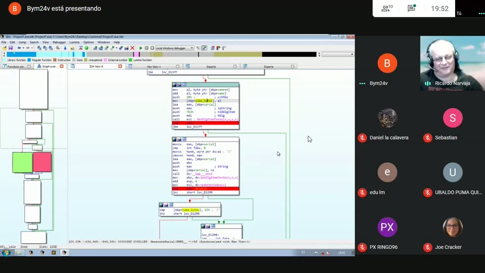
Entonces yo dije, bueno, si es 83, el A es 41 y el B es 42. Puede ser otro, ¿eh? Pero ese es más fácil, porque 41 más 42 da 83. La A mayor. Entonces, A o A, cualquier cosa. Con A y el B, el quinto cosa, te da 83. Y el faque uno es por entrar por la parte de la cara, y cuando se clina en la cara. O sea, que te lo llevaría aquí abajo. Y eso te lleva ahí donde está el cartel bueno, que lo mostramos ahí en el corso. Y ahí sale el cartel bueno. Lo vimos, que era el... En la parte verde. Y ahí rellena otra vez los campos con increíbles... Claro, vuelve a poner, es un loop. Si no, vuelve a poner los nombres de vuelta. Nombre serial para que vuelvas a intentarlo. Como es un loop. Es bueno. Así que... Lo de faque lo vi en el 64 toqueteando. Mirá, ¿puedo compartir un poquito la pantalla? ¿Un minuto? Sí, sí, claro. A ver. Cortaría más. A ver. Esta. A ver, espera un cachito. ¿Se ve mi pantalla? Dígame cuando se ve mi pantalla. Ahora estás presentando. Ah, ¿se ve? ¿Se ve mi ida? Sí, sí, sí, sí. Bueno, este es el choteado, ven. Es feo. Es horrible. Ese es el feo, feo. Es feo, pero... Yo no voy a mostrar cómo se soluciona, pero mira. File, script file. El de cojones. Vamos a ir acá donde dice trabajo, spider trabajo, y un script que yo hice, reparador de choteado. Trabajando. Hay que dejarlo que labure, porque tiene que reparar toda esa cagada. Vamos a ver si funciona, porque por ahí no funciona. Lleva un rato. Ahí está, ven. Ahí está analizando. Ahí lo está volviendo a analizar. Lo repara, lo vuelve a analizar. Tarda un ratito, porque es una vuelta al análisis. Venga, acá abajo está el análisis de vuelta, ve que está caminando. Pedazo de script. A ver. Sí, no es tan difícil. Eso lo vamos a hacer en un videíto. No termina de analizar. No me hagas de escojonar, que tiene la mujer aquí durmiendo. Mira, ahora termina, ¿ves? Ya termina.
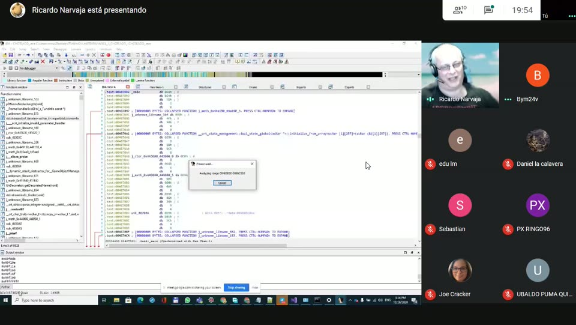
A ver cómo queda. Ahí termina. A ver qué. Analizando rango. Un scriptcito. A ver cómo cambia ahora cuando le tocas un poquito. Eso no es nada. Un script desofuscador. Sí. Ahí está, termino. Qué bueno. Volvamos a dónde. Eso sí que es interesante. Al main. Volvamos al main. Qué buena pregunta. Quedó. Main cero, acá. Miren qué lindo que quedó ahora. Ah, sí, sí, sí. Ahora quedó bien, ¿eh? Acá se ve todo lindo, las funciones, todo. Tienen que parchear todos los code que son. Hay muchos nobs, por lo que veo. Toda la basura. Hay muchos nobs, por lo que veo. Son instituciones privilegiadas, ¿no? O algo así era. No, son basura que te rompe todo. Ahora está todo bien. Ve cómo ahora se ve lindo. Sí, sí, pero cuando el desambrador no lo reconoce, lo reconoce más cuando pone prestigio adelante. Claro, y bueno. Así que funcionó, funcionó. Bueno, listo. Ese lo vamos a ver en un video. No es tan difícil, no es tan difícil. Ese es... Hay que buscarse, buscarse un poco... Le voy a dar un puntito. Le voy a dar un... Una cosita para que vean de LIDA. ¿Qué tiene? Para que vean... Para ayudarlo. Vamos de vuelta a cargarlo de vuelta como era el choteado original. Choteado azul, para que vean cómo era. Ah, no. El choteado azul, no. El choteado este, nivel 3 choteado. Vamos de nuevo. Como era original. Una cosa que ayuda mucho. Sin símbolo, nada. ¿Qué símbolo, nada? Sí, sí, sí, nada más. Vamos a dejarlo que... Una cosa que ayuda mucho. Cuando vos usás LIDA. Que tiene que eso... Van a ver que está piola. Esto es una ayudita. Para el que lo quiera hacer, vamos a poner una ayudita. No es necesario que lo hagan con un script. Con esto, con esto solo se van a dar cuenta muchas cosas. Ahora que les voy a mostrar un tip. Con esto lo van a poder solucionar. Sin necesidad de script. Después de hacerlo, hacemos el script. Pero esto lo va a ayudar. Bueno, hay que esperar que... Este tarda un rato porque está bastante roto. Entonces, en esa rotura, ahí empieza a aparecer. Tan mala rotura. Pero salió lindo roto, ¿eh? La verdad que... O sea, todos los códigos ofuscados lo que tienen es basura en el medio. Lo que hay que tratar es de separar la basura de los códigos en serio. Eso siempre pasa. Entonces, yo les voy a mostrar cómo se hace. Cómo se puede empezar. No digo cómo se hace. El script es otra cosa.
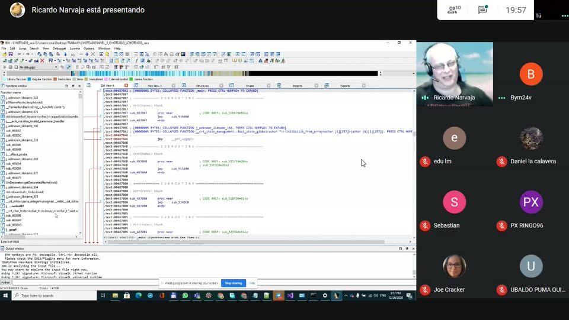
Yo digo cómo se hace, aunque sea a mano. Pa' que esto quede bien. Lástima que tarda un ratito, ¿no? Pero bueno, ahí va. Ahí va. Bueno, ahí está. ¿No es cierto? Yo voy a empezar acá. Entonces, agarro y lo hago rápido. Aprieto F2. Pongo... Como es, Edit Breakpoint. Y le pongo que a partir de ahí tracé nada. Y ahora le doy Debugger. Select Debugger. Bueno, Local Windows Debugger. Y le pongo Trace, que haga Tracing. Bueno, le doy Run. Ahí está. Y eso. Vale. Y ahora, va a trasear. Va a salir el cartelito. Bueno, ahí va a aparecer el cartelito para... Para poner el cereal. No, este no era. Este. Pongámosle. Pepe. 98, 98, 28. Pepe. Bueno, ya está. Con eso ya vemos. Entonces, ahora paramos. Ahora paramos un poquito. Y ahora van a ver una cosa que cuando vamos de vuelta al Main, una cosa que puede ayudar, donde estábamos antes. Si me funcionó o no me funcionó. A ver, ¿dónde está el Breakpoint? Te va a ver. Breakpoint. Breakpoint Live. Acá. Algo hice mal. Bueno, no pasó. No me funcionó. Pero vamos a hacerlo de vuelta. Breakpoint. ¿Qué hice mal? Edit. Trace. Ah, perdón. No era trace. Era enable tracing. Era enable. Acá, que cuando pasa por acá, habilite el tracing. Y si sabes dónde querés que termine, que se habilite el tracing. Cuando pasa por ese Breakpoint, que empiece a trasear. Y si sabes un lugar donde terminar, pero como está todo roto, no sabés. Entonces ponemos ahí. Ahí era. Ese era. Ok. Entonces, ahora sí. Le damos Run. Ahora sí. Vamos a poner Pepe. Vamos a poner... Ve que tarda porque está traseando. Entonces ahora ponemos... Se va poniendo amarillo. Se pone lento porque está traseando. Y después que termine el Loop, y vale, bueno. Ahí está. Y ahora lo paro. Y ahora, ustedes pueden ver... ¿Al pause o al stop? Y los lugares por donde pasó se ponen amarillos. Y los lugares de basura, quedan en blanco.
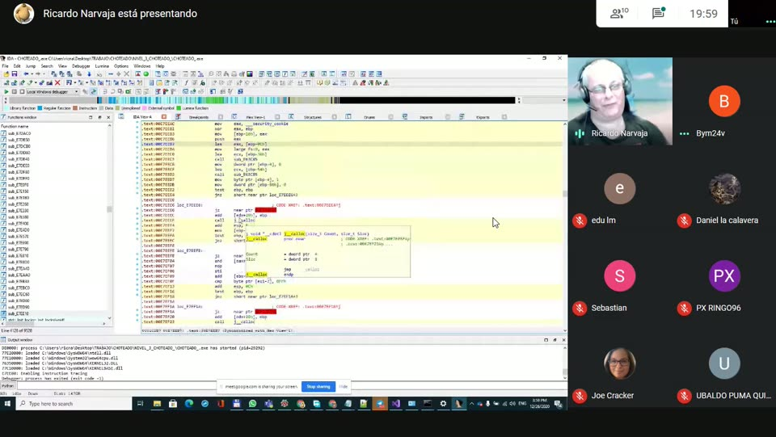
Ajá. Fíjense. Acá empieza la fusión. Acá es basura. Que realmente lo que ejecuta es lo amarillo. Lo blanco es la basura hecha para romper la pelota. Ay, qué bueno. Es lo que tú estás viendo en Ida. Qué bueno. Entonces, nopear, ¿no? Entonces, lo que hay que hacer es, si uno agarra, por ejemplo, estos bytes, ¿no? Vamos a mirar un poquito los bytes. Sí. Este, save bytes. Vamos a mirarlo así. Si yo lo miro así, ¿qué sentido tiene test EVP-EVP si EVP no puede valer cero? Ya. Es obvio que EVP no vale cero porque es el marco de la variable. O sea, que esto es una cosa para engañar. Esto es un jump. Test EVP-EVP, pero si EVP no es cero, esto es lo mismo que un jump. O sea, que esto en realidad va a saltar ahí. Esto en realidad siempre salta. Esto es lo que hace para confundir. Porque si, en realidad es un jump, porque EVP nunca va a valer cero. O sea, si no es cero, salta. Y va ahí. A E76 más 3. Entonces, ¿qué hago? Vengo acá y me fijo. A E76 más 3. Acá, ¿no? Sería el 7 de 9. JMP a la dirección siguiente. Pongo el A6 y ahí veo el resto del código. Ahí veo cómo sigue el código. Entonces, ahí sé que todo esto es nopeable. Porque todo esto, este es al pedo. Porque que salte ahí es al pedo. Entonces, si yo nopeo todo esto. Claro. Lo que hay acá, lo nopeo, me va a quedar. Y voy haciendo lo mismo. Es que por eso había visto yo antes en los basic blog un montón de nobs. Digo, ¿cuál queda de nobs? Cada pedacito de esto. Y fíjese que cada uno empieza siempre con test EVP, EVP. Ya, ya, ya. Todas las partes rotas empiezan con test EVP. Entonces, ojo, hay fujadores que no son siempre iguales. Fujadores que van cambiando. Pero uno tiene que, al trasear, uno ve qué parte es la que. Esto lo ejecutó. Me gustó al pedo. Porque esto realmente lo que hace es romper. Lo único que hace es saltar ahí. O sea, es que lo mismo que si vos lo nopeas todo es como si no existiera. Porque al pasar todo igual va a venir acá. Entonces, conviene nopearlo para que no lo confunda. Entonces, nopeas todo, nopeas todo. Buenísimo, muy bueno, muy bueno. Un tipsito le di, un tipsito le di. Sigan ustedes. De ahí ya se le escribe después. Pero bueno, ahí sigue. Dice Joe que poniendo todo en Ops, luego no se ve en forma gráfica. No se ve en forma gráfica. Sí, sí, porque tenés que analizar. Claro, ya rompe. Tenés que analizar, pero todo y tenés que ir reconstruyendo. Eso, eso. No, pero hay que hacerlo. ¿Cómo lo hice yo con el script?
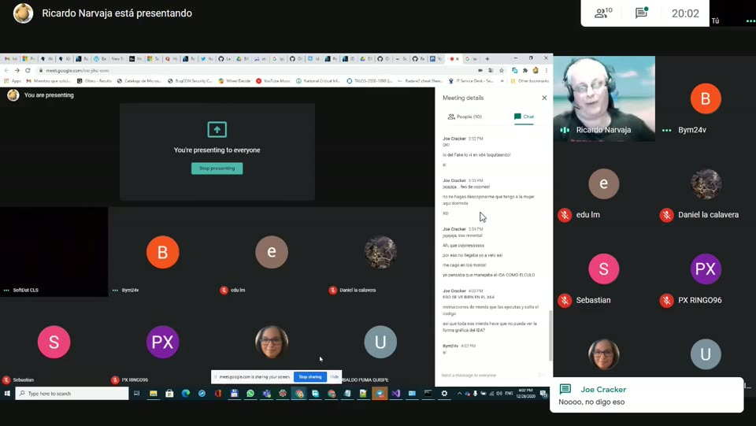
Hay que hacerlo bien. O sea, si vos lo haces. No, no digo eso. O sea, si vos nopeas todo, si lo nopeas bien, te va a quedar feo. Pero lo aplicas al ejecutable y lo volvés a abrir el ejecutable. Entonces, al ejecutable con los cambios lo volvés a abrir, te lo vuelves a analizar completo y te queda bien. O sea, ¿cómo me quedo a mí? Yo pasé y después me quedo bien con todo gráfico. Claro, lo que dice Joe es que al estando la... Como hay buy en medio que... Claro, te rompe todo para... Además, Ida no sabe interpretar eso. Entonces, el gráfico no puede construirlo. Ida, para construir un gráfico en bloques, tiene que tener un epílogo y un final. Tiene que tener una función. Y eso no es ni siquiera. Cuando eso se rompe. Es porque eso en X64, como es dinámico y está en tal, es diferente. Pero Ida, el gráfico... Además, por eso las direcciones que salen en rojo, a la izquierda, es porque no se puede completar ese gráfico. Estamos con ese trace de Ida. Porque, inclusive, vos podés guardar un trace que te lo pones así en amarillo. Después podés hacer... Si tenés un programa que no sabés dónde se bifurca... Por ejemplo, vos querés ver qué pasa si ponés, qué sé yo, nombre... En el nombre le pones número y en el nombre le pones letra. Como el escramio y el conejero, que va apareciendo el lugar. Hacés un trace, después hacés otro trace diferente con la... Uno con número, otro con letra, y después lo pones uno encima del otro y te muestra. Te muestra en un color los lugares por donde pasaron los dos. Y en un color diferente los lugares por donde pasó uno y no pasó el otro. O sea, entonces ahí ves la diferencia. Oh, qué bueno. Entre el que pasó por uno y el otro no. Eso está bueno. Está muy bien, ¿no? Esa es una forma de sacar cosas por diferencia. Sí, sí, sí. Por diferencia de... Uno va haciendo y cómo... Y al pasar, este pasó por acá y el otro no. Entonces, simplemente con eso ya ves por dónde te das cuenta la diferencia entre dos tiros. Eso es una cosa muy importante. Está muy bien. Claro, cuando... Ya lo vamos a ver. Ya lo vamos a ver en un vídeo. Cuando la función esa que está Ricardo ahora en el mail está bien construida. Es decir, que ahí la reconoce todo bien. Le das a la P. Si le das a la P, se pone las letras... Si las direcciones se ponen en negro. Quiere decir que puede construir un principio y un final. Ya. Si yo ahora pongo... Cuando la letra está en rojo quiere decir que no sabe construir ese bloque. Claro, si yo le doy acá creé y función me va a tirar error. Ahora es la P. Si me da la P, no... Dice que no hay error. Porque no sabe dónde está el final, no sabe dónde está el return, no sabe cómo se termina. Pero si vos lo vas arreglando y lo vas poniendo a 90, después tipo le das...
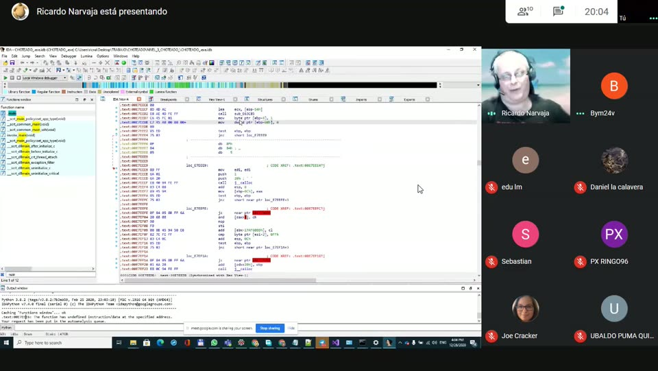
Yo lo que hice mejor se puede volver a analizar acá mismo, pero lo mejor es... Claro, mamá no es un coñato. Lo hago scripting, pero... Yo lo hice con el script. El script te lo arregla todo. Pero uno, si no, lo que lo quiera hacer también puede guardar los cambios esos que hice en la memoria. Yo lo... Con Apple y Patch, este Patch Program, Apple y Patch. Y entonces eso lo guardás en el ejecutable. Te fijás si sigue funcionando y después lo volvés a abrir que lo analices tú de vuelta y te lo arregla todo. Con el análisis ya con los 90 y todo. Pero yo lo hice directamente en el mismo porque con el script uno puede directamente hacer muchas cosas. Claro. Lo voy a arreglar ahí. Comarizarlo. Había quedado lindo. Ahora mirá que volvió a romper. Pero te arregla todo y con eso ya después es fácil. Por ahí para la próxima vez si lo quieren ir mirando para la próxima vez ya tienen un tip para la próxima vez que se hace una juntada ya tienen mejor para ir mirando. Muy buena ayuda, sí, desde luego. Con lo del Navy 3C, eso no lo sabíamos, el Enable 3C. está muy bien. Sí. Inclusive podés poner Enable en un punto y en otro en Disable, cosa que cuando pases por cierta zona nada más tracés. Lo que pasa es que yo no sé dónde termina porque está todo roto. Claro. Pero si no vos ponés en uno ponés así, haces un Breakpoint para empezar, ponés ahí F2 Breakpoint y le ponés Enable y en otro al final donde termina todo le haces lo mismo y ponés Disable. Entonces cuando pasa por uno habilita y cuando pasa por otro deshabilita. Tracea entre esas dos partes. Si yo hago acá entre este y este y le pongo acá en Able y a este le pongo otro Breakpoint y le pongo acá Disable va a tracear esta parte sola. Acá le pongo en este Edit y le pongo Disable a este y le doy Run. El tipo lo va a ejecutar todo pero cuando entre acá va a tracear y después va a seguir Run. Entonces ven si yo le doy Run ven que el tipo ahora funciona normal pero ven que esta parte sola la tracción la parte que yo le dije desde acá hasta acá y el resto nada, todo está Run. Solamente tracción marcó en verde solamente la parte para no sobrecargar mucho el debugger. Claro, le puedes poner porque a veces te interesa una parte sola entonces directamente también que sea más rápido y que no Bueno, sigan, sigan. Yo he hecho una pregunta ¿Qué decías, yo he? Que no Yo he, ¿qué preguntabas? Yo para enseñar la forma gráfica apuesto la barra espaciadora. Sí, eso es. La barra espaciadora
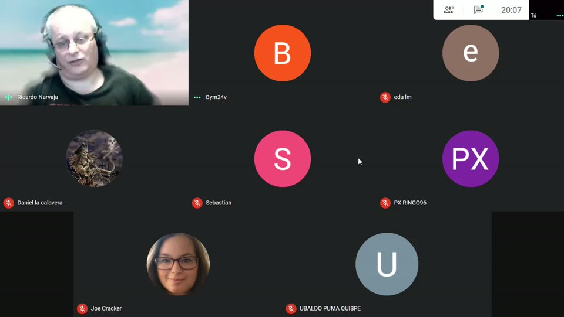
Apretar la barra espaciadora y te cambia gráfica. Si es que realmente Sí, claro cuando está en negro que están bien analizadas no hay problema. Si es que está bien te la va a cambiar si te dice no te va a decir que no Si te dice que no es porque las letras están rojas que como nos mostraba Ricardo y no, ese bloque Ese bloque está roto Está todo roto A mí me costó mucho romperlo El líder está bastante vivo ahora cosas que antes que vos lo rompías fácil ahora hubo que hacer bastante trampa y meterle un EVP raro y hacer cosas raras meterle un salto al medio pero aparte eso siempre un salto al medio de instrucciones antes se rompía pero antes podías hacer jump ahora los jump al medio no rompen directamente se acomoda todo y te lo pone bien y este solamente lo agarró porque es un J condicional y entonces el tipo trata de ver las posibilidades que puede haber y ahí es donde se rompió porque es condicional ahí es donde empezó el problema y bueno ¿Qué va a hacer? O sea el tema para arreglar el enfocado es siempre tratar de decir si uno no sabe si tiene enfocado jodido tiene que trasear y guardar un archivo con todo lo que traseó eso es si no lo puede reconstruir por lo menos trasea y guarda un archivo y mira todo lo que hace por lo menos es otra forma bueno listo sigan sigan ya metí la cuchara no no está genial muy bien para la próxima vez ya saben que tienen que no pear lo que no se ejecuta exactamente pero claro básicamente han dado una ayuda y casi la solución pero bueno que los siguen bien y cada uno haga su solución que no después vamos a hacer el video después vamos a hacer el video pero por lo menos claro que cada uno haga su script o su forma de lo que quiera claro ejecute bien bueno sigan no quiero meter más la cola pues nada pues este habíamos terminado el segundo y vamos a ir a por el tercero ¿no? sí o lo que digáis o a mí que tengo mecha yo me preguntaba qué puto comando no sé que no llego a verlo lo que pasa que para eso hay que ver los primeros videos del curso vos no lo pasaste eso por arriba eso lo pasaste por arriba entonces hay que mirarlo porque ahí explicaba todas esas cosas claro no la introducción el video de introducción a Ida está muy bien es de lo mejor que hay por ahí hay uno de introducción a Ida sí muy bueno
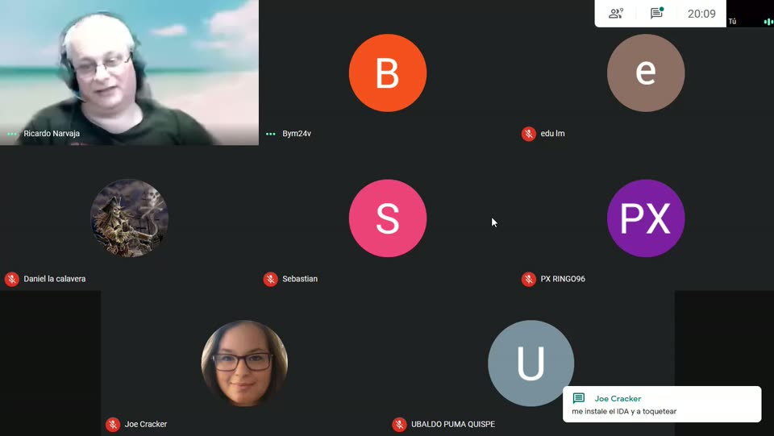
claro vos te diste la actividad de toquetear pero hay uno que creo que el 14 era de introducción a Ida que ahí explica eso es ese hay que verlo sí o sí hay que verlo el 14 empieza ahí después después cuando se fue usando algunas cosas a medida que la vamos usando nos fuimos diciendo pero el inicial era el 14 creo que era el 14 fíjate que dice introducción a Ida creo que era el 14 bueno sí el libro hay un libro de introducción a Ida sí pero bueno el video está muy bien explicado sí también con el libro vas a tardar mucho aparte hay cosas que ya en el libro cambiaron algunas cosas no sé si está la última versión del libro o versiones viejas pero bueno por lo menos nosotros estamos actualizados sí bueno adelante sigan con el que viene bueno acabamos de de abrir el cruce del tercero yo no vi nada pero no estás compartiendo la pantalla ahora tenés compartido ah vale claro muy importante very important vamos a ver este Oscar está Oscar Oscar está me está escuchando acaba de entrar ahora está ahí sí ya perdí toda la explicación que hicimos y acaba de entrar ahora se fue la luz acá donde estaba y no pude ya ya todos los tips para el parcheado justo se te fue la luz bueno después lo ves no hay problema no hay problema está grabado todo estamos grabando si está grabado si está grabado sí sí no hay problema llevamos dos horas de reunión dale el otro uno más y listo después seguimos otra vez la próxima vez vale pues bueno hemos abierto el tercero el cruce del tercero y aquí ya ya podemos ver que piden un fichero así que hay que crear alguno en la misma del pit el hquite no sé si lo tengo aquí vamos a dejarlo aquí ya preparado vale bueno ahora hay que ver el largo a ver supongo que lo de
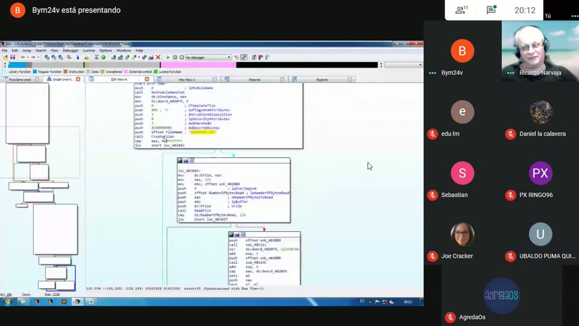
crear desfiles será si existe si existe lo lee y si no lo crea supongo y aquí está el real ahí lo lee vale vale esto supongo que sea el buffer el buffer donde va a quedar no tal number by 12 h 12 h vamos a meterle aquí fruta 41-41-41 41-41 ahora era tildes si no te dejo 12 justo o más que 12 yo he leído 12 sí, 12 h ponía a ver a justo justo el tamaño y bueno vamos a ir tirando aquí a ver y luego ya hace un short con tirando a ver si ya viene el fichero el tema aquí es vale ese es el about ni pasó por ahí hay que ver cómo pasa hay que ver esto porque siempre guardarlo exactamente ni pasó por aquí entonces tenemos que ver aquí creo que está pasando primero esa función debe desvenir de otro lado nos lleva nos lleva afuera porque no pusiste bien el nombre crackme3k no debe estar bien el nombre no debe estar igual si hay que renombrarlo igual sí crackme3 punto k con mayúscula claro pero ah pero está bien sí sí está bien pero hay que ver si no es un si tiene mismo está bien sí sí está bien sí está bien vamos a ver otra vez a ver no me tiro afuera son todo con mayúsculas ¿no? sí sí sí función create el control se está tiene control se está maravilla bueno bueno bueno esto serán las constantes que
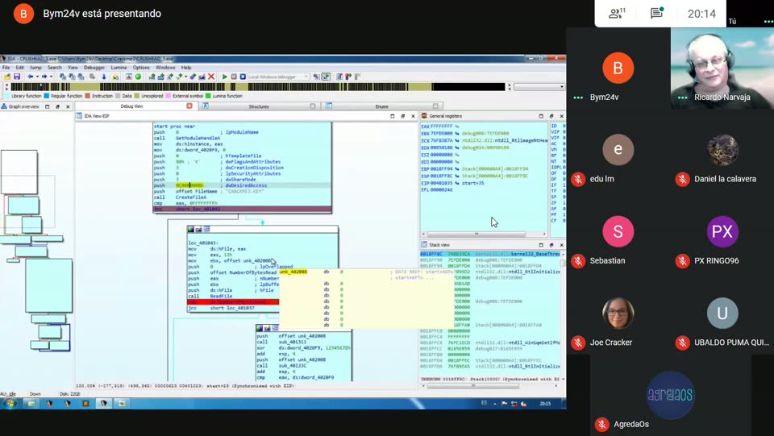
necesitan o posición de tipo de estas pero es que no directamente no lo encuentra a no ser que lo esté intentando buscar en otro sitio en el 64 se puede ver también la ruta y todo lo que tiene que estar en la misma carpeta que el avión estaba en la misma carpeta que el exe está la misma no de estos que me 3 3 lo que pasa que el tamaño pone 0 bytes las guardado ese es un fallo que me pasaba a mí mucho nada nos pasa a todos a mí también pasaba lo mismo que que mire el tamaño es que cuando ha visto cuando ha visto 0 bytes ahí había visto algo raro ahí a ver a pasar el link a pasar el link de baúl a su cracker que no lo tiene ah sí pero el link vamos a ver una tal hecha de crack latino uno de los que estábamos con el terceros que están haciendo el archivo que estaba vacío estaba vacío no estaba sin guardar nos pasa todos a mí ya me ha pasado alguna vez una macanita ahora sí no pasa nada ahora lo ha pasado ahora ahora un que está compara agrandar un poco no veo nada y hace un poquito hace un poco zoom vale vale ahí se ve bien vale y compara el número con 12 h vale ya
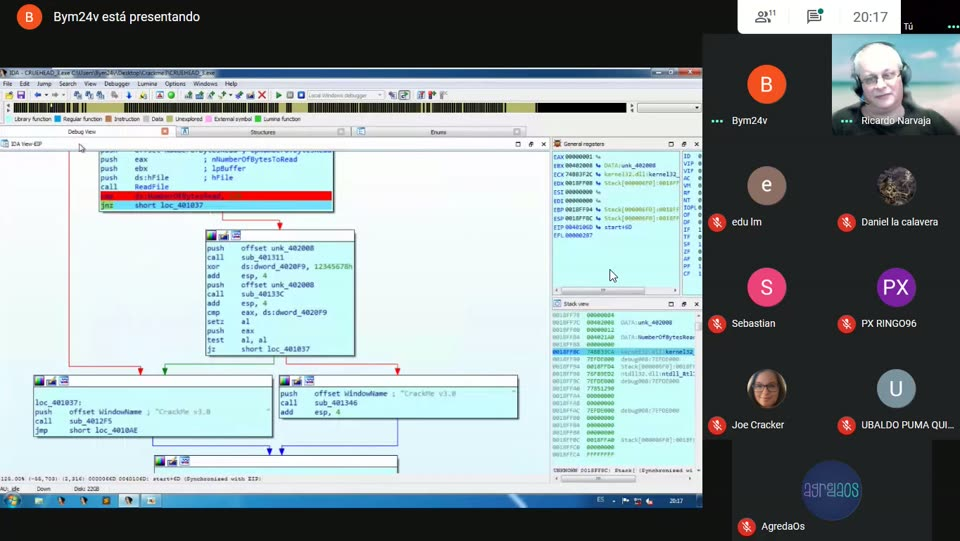
claro es que son 12 pero yo es que lo he escrito más 16 son 18 ah amigo ya ya ya ya son 12 hexa vale tengo que parar esto uno más vale otro más creo que está ahí vamos a ver vale y ahí va a hacer un short el contenido del fichero eso es la fruta fruta fresquita sí pero primero el que me cae ahí adentro siempre tiene estos looksitos tiene ahí hay un short también ahí le pone a cero el fx y es que tiene la misma pinta que el de antes y ahí coge es y es lo que le pasa ahí hace un loop vale vale vale vale vale pero todavía no tiene el valor todavía no está el valor todavía no está el valor sí claro no entró todavía no entró todavía ahí uno más ahí está la fruta y BL que es 8 ahora lo mueve pone a 41 y lo va a azorear está azoreando todo con 41 agarra el primero tuyo la constante exactamente la constante que se queda para azorear no le incrementa incrementa a BL mira agarra 41 42 43 o sea que va el primero con 41 el segundo con 42 lo va a azorear el tercero con 43 y así lo va a azoreando y ese es mi fruta la pasa ahí y la va o sea va a tener que ir anotando porque si no no te va a acordar pero azorea y lo pone ahí en ese es cero claro es cero bueno en ese caso ahí está guardando también una sumatoria ese ad ese lugar ese que está ad
esa dirección 40 ahí va a haber una sumatoria porque ahí va a ir sumando todos los bytes ahí va a haber una sumatoria sumatoria ahí va a estar toda la sumatoria incrementa ese pero la sumatoria pará pará la sumatoria de tus bytes no porque primero hizo el ZOR o sea zorea y lo va sumando o sea zorea y va sumando no es el es como zorea y suma va zoreando y después guarda la sumatoria la sumatoria de los zoreados de los bytes zoreados sería o sea o sea los zorea y los va sumando sumatoria de bytes zoreados ahí va incrementando yo creo que tendrías que anotar eso aparte porque si no te vas a hacer mucho ligo que va agarrando cada byte primero lo hace con 41 después eso lo va sumando ahí los zoreados lo va guardando en ese suma bytes es una especie de sumatoria de los zoreados tiene que hacer un agarra byte a byte el tuyo los zorea de los zorea el primero con 41 y después con 42 con el 3 no es constante bueno empieza en 41 no quedó muy claro eso no quedó muy claro eso si no lo que pasa es que también a ver la constante va sumando vos tenés que poner vas oleando va sumando 1 incrementa pero va sumando 1 ya está la constante del sol la constante y eso lo va soriando byte a byte se va sumando tiene 41 y va sumando 1 y va soriando byte a byte y guardándolo sumando o sea y después todo eso lo va soriando y lo va sumando con mi power
¿no? creo que era con tu entrada con mi fruta con mi cereal y después lo va sumando todo ese y después va guardando la sumatoria va a la miércoles te sueño va guardando la sumatoria bueno va guardando la sumatoria aquí la sumatoria de los zorea la de bytes ¿y qué hay en comparar con 4F? ahí hay una comparación hay una comparación ahí sí una AL ¿BL qué es? AL es el resultado ah BL cuando llega a 4F cuando llega a 4F cuando llega a 4F quiere decir que empieza en 41 42 cuando llega a 4F sale o sea que en realidad el contador es BL empieza en 41 y termina en 4F ese te dice lo que va a solear porque más de 4F no ya sale los demás no lo toman cuenta o sea que empieza 41 42 43 44 45 46 47 48 49 50 perdón 5A 5B 5C 5D 5F deben ser deben ser justo los 18 bay eso que te hace meter y ahí sale bueno ahí sale y ahí guardo todo y ahora por ejemplo la primera como es 0 a comprar AL con 0 me tira fuera ya directamente ya no tiene que no tiene que el chorero no tiene que dar 0 si y ese x que es lo que sale ahí al final ese x es guardado aquí ahora pero ese x al principio uno lo incrementa aquí ah en la cantidad de veces que pasó por ahí como un contador un contador un contador en realidad tendría que ser bueno ponerle a la variable esa 40 21 49 ponerle bytes bytes oreados ponerle número cantidad de bytes oreados cantidad de bytes oreados no bytes cantidad es la cantidad claro cantidad de bytes que sorió cantidad de bytes es el contador es decir cada vez que claro
esto luego se podrá verificar que si el power se sorió en todas las letras o en no o en sí o en cuanto a sí o en cuanto a no y todo eso bueno ahora volve para el otro lado a ver que más hace vale ahora una vez que ha soriado con eso estamos allí bueno si tenemos que volver hasta aquí salimos porque nos ha tirado fuera la sumatoria de bytes la soria con ese número el resultado que te dio ahora hace vuelta a la sumatoria de bytes orea con ese número en exo va a tener que hacer unas cuantas cuentas para sacar acá el asunto sorea con 1,2,3,4,5,6,7,8 la sumatoria de bytes eso es eso es ¿y después? después bueno la unidad de la pila 4 que eso no interesa vuelve a poner la string ah y ahí que hace agarra la string si aquí le pasa la fruta lo pasa a ese y a ese le añade o sea que ahí le está lo que está haciendo es fijándose si en la posición esa en E claro en la posición esa va a buscar algo especial porque ahí está buscando el contenido de esa posición exactamente y lo pasa a EA luego y ahí está el contenido de esa posición con la sumatoria de bytes ya está eso es el contenido de esa posición con la sumatoria toda anterior de la posición esa 14 esa con la sumatoria toda esa que dio antes y si da igual ya está esa es la comparación hay que hacer ahora hay que revertir todo pero es eso hay que hacerlo todo hay que hacer la la fórmula y ver como cuál es el que te lleva ahí si ya con eso está hay que hacer hay que hay que plantear las ecuaciones y tratar de despejar lo que no conoces
que es el valor tuyo claro a ver lo que está claro que la A no puede ser entonces lo que tenemos que llegar a que la A en el primer lugar no puede ser también en el segundo lugar ni la C en el tercer lugar o sea cada lugar no puede tener eso estaría bueno hacerlo en Python este sí está bueno porque lo vas haciendo o sea la A no puede estar en la primera posición porque en la segunda sí porque cuando BL no valga exactamente no puede dar cero para que no dé cero aquí en la trampa esta pero ahí hay una cosa muy fácil claro no te deja que te dé cero ese es el tema porque si no uno agarra y hace que todos den cero menos el último y en el último le ponen valor que tiene que poner y listo en la que el primero te da cero ya te tira o uno te tira afuera entonces la cantidad la cantidad de bytes la cantidad de bytes la testea la cantidad de bytes no no la testea no no la testea y bueno entonces vos podés agarrar el primer byte y ponerle un valor solo y el segundo que te tira afuera en el primer byte le ponés un valor ponés qué sé yo 41 y 42 y de los otros ponés cualquier cosa en el segundo te va a tirar afuera quiere decir que esta sumatoria lo que va a hacer lo va a sorear ahí va a sorear una sola vez el 40 o sea perdón 42, 41 le ponés 42, 42 le ponés el primero te lo sorea y el segundo te saca entonces el primer sort te va a dar y con eso lo simplificas a un solo byte o sea ponerle de entrada hace eso ponerle de entrada todos los bytes del archivo editar el primero ponerle 42 y el segundo 42 y después cambiamos el primero el archivo de vuelta ponerle se me ocurrió así no sé ponerle primero eso dejarlos todos iguales poner 42, 42 el primero o sea que solamente tome en consideración el primer byte y a ver qué pasa porque así el segundo te tiras afuera total no te dice nada así que cuanto menos va a ir a la operación es mejor vale aquí estamos en ello así bueno ahí te va el primero va a sumar 41 bueno hizo el sort entre 42 y 41 o sea que hay un 3 bueno quedaron los 3 está bien pasa por el contador creo que queríamos y ahora el segundo pues nos tiraron a 0 porque no importa no importa y listo y ahora
la suma es lo que tiene que tener 1, 2, 3, 4, 5, 6, 7, 8 ahora el 3 ese que tenías la suma esa era 3 con esto lo que quiere decir es que al primer byte la primera combinación de byte tiene que haber un residuo de 1 o sea el segundo un residuo de 2 y así porque supongo que si hago otra operación más el segundo byte si cojo dos bytes de la segunda versión tendré el 1 y el 2 ¿cuánto da ahí? ¿cuánto da ahí eso? claro el 3 ha sido el resultado de de Soriar de Soriar 42 con 42 y ahora Soriar de vuelta claro ahora de Soriar 42 41 eso 41 perdón el resultado o sea que ahí lo que te tenés que fijar es que el SOR de esos dos números de un número con ese ese número con otro te dé un valor que te pueda comparar con con un byte solo porque ese ese último el que lo compara es un solo byte así que yo haría una cuentita así poner en el notepad si vamos a hacer 43 un ejemplo y luego 42 otra vez para que lo salga o sea se vea 41 no pero lo podés hacer igual lo podés hacer igual volvés volvés dejalo así poner en el notepad esto que te digo yo a ver a ver si funciona poné así poné SOR en el notepad en un archivo de texto la fórmula un momento me escribo esto un momento si a ver está aquí poné la fórmula poné SOR poné XSOR no pone X SOR XSOR no X X una variable para despejar X XSOR 1,2,3,4,5,6,6,7,8 1,2,3,4,5,6,7,8 poné SOR ahí no XSOR XSOR 1,2,3,4,5,6,7,8 para luego despejarla ya entiendo y pone una variable XSOR XSOR XSOR espacio espacio SOR con X SOR SOR la función SOR XSOR eso es igual igual eso ese es el resultado que tiene que dar no, no, no eso no
al final después del otro lado igual eso te tiene que dar un BYSOLO si eso te da un BYSOLO vos ya lo podes comparar porque eso lo compara contra el BYS15 o sea que si ese SOR te da menos que 255 ya está porque es el BYS15 que lo va a comparar o sea ponele que ahí te dé 0XFF y después y haces SOR a ver si hay algún valor que dé SOR FF si hay algún valor si existe que dé SOR FF con 1, 2, 3, 4, 5, 6, 7, 8 cuál es el X que te tiene que dar entiendo para ver a ver a ver a ver a ver a ver a ver a ver a ver a ver a ver a ver a ver a ver a ver a ver a ver a ver a ver a ver a ver a ver a ver a ver a ver a ver a ver a ver a ver a ver el BYS15 0FF ¿Tenemos que hacer un SHOR de qué de X 1, 2, 3 no, no X no no sabemos 1, 2, 3, 4, 5, 6, 7, 8 con FF no, 8 hostia me he puesto 1 de mano no pasa nada 6, 7 y 8 con FF con FF ah, el problema claro que te queda un número muy grande o sea ese sería lo que te queda yo pensé si haces un SORD de un número chico con un número grande te da un número o sea el ideal hubiera sido que hubiera dado un número chiquitito por eso el tipo compara con 0 para que no no puedas hacerlo así con un solo byte lo tenés que hacer con varios bytes pero bueno no importa no importa escúchame hacé así pone a ver a vos te tiene que dar yo estoy pensando de una forma de hacerlo fácil si no si no se hace más difícil si, si, claro si lo suyo es que a ver hay que pensar hay que pensar dice que ya se bajó el el crummy tiene que estar en capitales capitales capitales de país a ver cómo podemos hacer acá claro es que digo a mí me parece que ocurre en forma más no, es más fácil poné a ver y poné estos dos ceros poné cero el primero porque hay que hacer sol con 41 que te va a quedar 41 claro poné cero poné cero el primero los demás 41
poné cero poné cero poné cero varios poné cero varios así cero tres o cuatro y cuarto y ese pone 41 42 para contar 41 42 45 41 42 45 ponele a ese ese es 45 sería para salir afuera ahí sería 41 42 43 sí, a ver anda despacito anda traciándolo despacito se me ocurre a mí así por hacer algo entra ahí en el bucle la sorea agarre el primero ahí están los cero y el 45 en la E sí va a ser el short de cero con 41 y queda 41 ok va a quedar lo mismo lo mismo que va a quedar 41 más 42 más 43 más 44 entonces es más predecible claro queda incrementa va a quedar así va a ir sumando va a ser la suma de 41 más 42 más 43 más 44 es que va a ir sumando los cuatro primeros en realidad puedes hacer así así vos sabes hasta donde vos quieras porque ahora va a agarrar y va a sumar el 42 así lo que haces es sumar 41 más 42 más 43 claro que ahora agarra porque siempre se está haciendo el 41 42 43 con cero con cero esa es la forma de evitar ese son entonces luego habría que sumar el 41 42 43 44 un ejemplo sumarlo para que me dé en IACS ¿no? exactamente entonces ya con eso tenés una forma más abreviada vos sabés que te tiene que dar esa suma ¿cuánto te da ahí? seguí a ver a ver cuánto te da salí de ahí a ver cuánto te da la suma hasta el final la ley F4 al final a poner el cursor al final y apreté F4 en el red F4 ahí está ¿cuánto dio la suma? 10 A muy bien muy chico sí y está yo creo que vas a tener que poner todo 0 menos el 15 o por lo menos 8 vas a tener que hacer una sumatoria que dé grande porque tiene que ser un valor grande para que o sea vas a tener que poner todo 0 y que sale poner todo 0 menos poner todo 0 menos el último poner todo 0
menos el último ahí tengo 41 el último ahí a ver y ahí vamos a ver ahí va a sumar el 41 más 42 hasta que llegue a ver vamos a salir de aquí ya cuando llegue el 4F el 4F ya no le va a gustar el 4E ese fue el último ¿cuánto dio? E9 es muy chico todavía ¿y cómo hace? a ver bueno a ver a Sorial a ver a Sorial a ver ¿cuánto da? ¿Sorial qué? el 3, 9 con sí, sí el 8 hace un paso más hace un este más a ver cuánto quedó el S suma by ah sí quedó 1, 2, 3, 4, 5 5, 9, 1 es muy grande porque ahora vas a tener a ver y 6, 6, 6 un poquito bueno o se fruta ah, pero para a ver entra ahí por ahí nos perdimos algo no, ahí lo que hace es agarrar el 41 el que viene después el 41 es un byte ah, pero para a ver no, porque agarra 4 bytes está bien entonces a ver, seguí ese es un The Word ese debe agarrar ve que está bien entonces ese no es un byte solo son los 4 bytes que vienen a continuación el 41 ahí le podés poner 4 bytes entonces ahí podés poner los bytes fíjate vos con qué compara compara sumatoria de bytes 12, 13 y bueno ahí le podés poner directamente ese valor a partir del valor 15 le podés poner esos bytes y ya te va a quedar o sea ponés esos bytes ponéslo a partir del valor 15 o sea bueno no, no ahí después donde está el 41 donde está el 41 porque ahí empezó a tomar el 41 y no sé no anotaste los bytes que eran tenés que volver a poner el breakpoint para ver con qué compara ah, vale ya, ya es eso porque compara contra los valores que hay a continuación 7 eso tendrías que poner ahí pero al revés ¿no? sería 91 tenés que ponerlo al revés creo yo no sé por ejemplo en vez de 41 pone 91 41 ah, está usado tenés que pararlo en vez de 41 pone 91 no, no en vez de 41 porque ese lo tomaba
el 41 ese pone 91 55 34 igual se puede hacer esto tiene que hacer keygen hay que hacer un keygen estamos haciendo así 12 a ver, prueba así hay que hacer un keygen todo bien hecho estamos tirando ahí algo a ver si es así ah, 91 0000 entonces quiere decir que tenías razón eran los anteriores o sea era el 91 y los anteriores eran ah, que hijo de puta ahí te caga porque entonces ahí sí bueno pero puedes hacer otra cosa está bien volve volve para atrás porque en realidad son los cuatro anteriores sería el 91 y los anteriores o sea que eso sacale sacale pero porque en serio volve a donde lee esos bytes no me quedo muy claro como lee cuando lee el ESI ese no, ahí no eso lo asuma cuando lee el ESI ahí dentro del call ahí ADESI 0E y apunta a ESI una vez que suma el 0E pero que llega ahí que llega la instrucción le voy a dar a correr y voy a montar ahí dale no, pero tenés que llegar dos líneas más dos líneas más apretá una línea más y ahora ESI dale doble clic a ESI pone U para que se vea bien a dónde va apretá U para que no que se vea la cadena no, pero apretá de vuelta en ESI para que apunte bien a los bytes que está leyendo ah, está bien son esos el 91 los que está hasta ahí entonces ahí hay que poner los valores ahí hay que poner los valores cuatro más para atrás ¿no? sí, sí o sea, cuatro más para atrás tiene que poner los valores que compara fíjate bien cuáles son ahí los que compara ahora porque ahora lo cambiamos sería el 12 claro sería el 12 34 el anterior 55
y el otro 91 y sacarlo es otro que sobraba en total hay otro que sobra creo que así es si no me equivoco ahí debe estar hay que hacer un keygen igual estamos haciéndolo así medio ahí está hay que hacer un keygen por lo menos lo guapo de esto es que así motiva a la gente por lo menos logramos así medio improvisando logramos sacar un serial válido hay que hacer un keygen todo bien pero bueno ya pasó por el lugar correcto a ver salió el cartel cracker listo muy bien bueno por lo menos vieron más o menos cómo funciona después hay que hacer un keygen hay que hacerlo bien entonces esto merece un keygen este sí merece un keygen el anterior que era un solo power no porque es uno solo ese que era reader soft de storm igual que el mío ese tampoco pero este sí hay que hacer un keygen en python hay que agarrar hacer las cuentas y hacer las mismas operaciones que hacer y comprobar también si existe fichero si no lo crea hay que hacer todo todo las mismas operaciones invertir y después lo vamos a hacer no lo vamos a hacer ahora pero bueno creo que nos divertimos un rato en uno en uno de los que hicimos anteriormente hice una interfaz en cesar que incluso apretaba los botones apretaba los botones y él mismo lo hacía todo ejecutaba el programa para la próxima vez para el próximo juntada extraoficial si alguien hizo un keygen lo puede mostrar eso está seguro que está motivado lo que no habla de lo que estoy viendo estuvo bueno el entender más que todo para hacerlo después del keygen si más o menos es eso nos pasa que nosotros lo tratamos de simplificar para que sea lo más sencillo posible así que de un resultado pero en el keygen hay que hay que analizar todos los casos no es cierto para que la cosa sea un poquitito mejor así sobre el pucho uno sin nada lo tiene que pensar un poquito más para hacer un keygen bueno creo que nos divertimos un
rato eh por favor después suban el alguno tiene alguna pregunta ya que estamos claro ya que estamos la pregunta se está grabando llevamos dos horas y 43 minutos por eso ya está ya hicimos bastante pero bueno si alguien tiene alguna pregunta lo dejamos anotado y para la siguiente no sé cuándo se va a hacer pero bueno la gente que el que quiere ir haciéndolo por lo menos si alguien quiere hacer un keygen de éste ya por lo menos tiene acá la base y lo mismo el el de choteado ya tienen una base también para hacer para pensar que en la siguiente que hagamos su solución también claro también por las soluciones que también ellos sean participe de y muestren su desarrollo y sus cosas bueno bueno la verdad que muy contento y ver que la gente le gusta y que por lo menos participa y bueno vamos a ver nos vemos entonces no sé cuándo vas a hacer la próxima porque ya vosotros está listo entonces sábado que viene no para el próximo sábado si me dice que lo disculpe ante el resto pues se tuvo que ir bueno para el próximo junto a la fíjense si alguien pudo hacer un keygen más o menos ve cómo funciona y si alguien pudo solucionar el choteado ahora tienen un tip con eso ya más o menos aunque no lo hagan con un script no importa háganlo como sea más no cualquier cosa pero el chateado si está difícil con el tip que yo le di vos no lo viste con el tip que yo le di ya tienen algo mejor es un hueso duro y de hecho claro de hecho se puede hacer bastante fácil también en python no pasa que no se hace fácil una vez que uno tiene el eso se puede el archivo ese que el 3 te puede exportar un archivo de texto también así que uno puede tener ahí todas las instrucciones que pasa la que no pasa todo
así que bueno claro una de las cosas que yo le voy a explicar después voy a hacer un videito y le voy a no congelen no congelen la pantalla no estaba viendo y así que por el lado que estaba grabando no se ha visto por el soldado ahora ya veo que alguno va a ir hasta ahí va a congelar la pantalla iba a decir yo una cosa pero eso también da mucha pista entonces no lo voy a decir nos vemos el sábado que viene mucho muy bien maestro nos lo pasamos muy bien maestro con todos chao chao